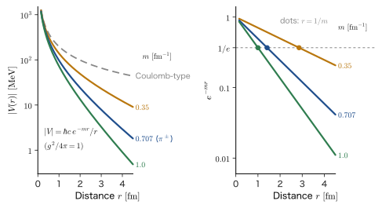

Chapter 65Toward Quantum Field Theory and Elementary Particle Physics — A World Where Particle Number Changes, an Introduction to QED, and Dirac Electrons in Solids
In the preceding four chapters (Chapters 61–64), we reworked the wave equation of the electron into a form compatible with relativity. The Dirac equation contains spin $\tfrac12$ from the start, and its negative-energy solutions were reinterpreted as the positron, an antiparticle. Is the quantum mechanics of the electron, then, complete? It is not. If we try to confine an electron to a region narrower than a quarter of the reduced Compton wavelength ($386\ \mathrm{fm}$), that is, narrower than about $100\ \mathrm{fm}$, then, because of the uncertainty principle, the uncertainty in the momentum becomes large, and the uncertainty in the energy reaches the mass energy of one electron–positron pair, $2m_{\mathrm e}c^2=1.022\ \mathrm{MeV}$, so that a pair of an electron and a positron appears out of the vacuum. A single photon turns into an electron and a positron, and an electron and a positron turn into two photons. In a world where the “number of particles” changes, the wave function $\psi(\bm{r},t)$ of a single particle cannot keep up with what has to be described.
The way to a solution is to apply the second quantization learned in Part X to the electron itself as well. In Part X, we viewed photons and phonons as follows: “each mode of the electromagnetic field or of the lattice vibration is a harmonic oscillator, and the quanta of its excitation are the particles.” We regard both the electron and the positron as quanta of excitation obtained by quantizing each mode of a field (a quantity that has a value at each point of space). This is quantum field theory. In this chapter, we stand at the entrance to this world. First we quantize the field and see that antiparticles appear naturally (Section 65.1). Then we derive that forces appear as the exchange of particles: the exchange of photons produces the Coulomb force, and the exchange of massive particles produces a short-range force of the Yukawa type (Section 65.2). Next, we read the Lagrangian of quantum electrodynamics (QED) and the Feynman diagrams as pictures that depict the terms of the perturbation expansion, and we find the numerical values for Compton scattering, Thomson scattering, the electron's $g-2$, and the Lamb shift (Section 65.3).
The connection with materials is also deep. The Dirac equation is not only for electrons in vacuum. The electrons of graphene, in which carbon atoms are arranged in a honeycomb pattern, are massless Dirac particles that travel at about $1/300$ of the speed of light, and the electrons and holes of a semiconductor with a gap are massive Dirac particles. In Section 65.4 we see how tools developed in the physics of the vacuum work just as they are inside a solid. Finally, we present a table of the correspondence of symbols for moving on to elementary particle physics (AD 09) (Section 65.5), and we look back on the whole book, from Part I through Part XI (Section 65.6). This chapter is the last chapter of the book.
- Be able to explain the three reasons why the relativistic quantum mechanics of a single particle breaks down, and to state that the resolution is “field quantization”
- Be able to expand the complex Klein–Gordon field and the Dirac field in terms of creation and annihilation operators, derive $\hat{H}$ and the charge $\hat{Q}$, and calculate that particles and antiparticles appear with the same mass and opposite charges and that the energy of the pair state $\hat{b}^\dagger\hat{d}^\dagger\ket{0}$ is $2E_p$
- Be able to find the force between static sources by second-order perturbation theory; to derive, carrying out the Fourier transform without skipping any lines, that the exchange of a particle of mass $m$ gives the Yukawa potential $V(r)=\dfrac{g^2}{4\pi}\dfrac{e^{-mr}}{r}$ (the Coulomb potential for $m=0$); and to find the range $1/m$ for $\pi$, $Z$, and $W$
- Be able to calculate the cross sections of Rutherford scattering and Mott scattering, and to obtain the numerical values for the scattering of $200\ \mathrm{kV}$ electrons by Au
- Be able to read the QED Lagrangian, vertices, and Feynman diagrams as terms of the perturbation expansion, and to handle the wavelength shift in Compton scattering, the Thomson cross section $\sigma_{\mathrm T}=6.652\times10^{-29}\ \mathrm{m^2}$, the series for the electron's $g-2$, and an estimate of the magnitude of the Lamb shift
- Be able to derive $\hat{H}=\hbar v_{\mathrm F}\,\bm{\sigma}\cdot\bm{q}$ from the honeycomb lattice of graphene, and to understand the Dirac cone, the density of states, Klein tunneling, the Landau levels $E_N=\pm v_{\mathrm F}\sqrt{2e_0\hbar BN}$, and massive Dirac electrons by means of a dictionary that relates them to the Dirac equation in vacuum
- Be able to use the correspondence between the symbols of this book and those of elementary particle physics (AD 09) (natural units, Heaviside–Lorentz units, relativistic normalization), and to state what the 11 parts of this book have built up
Source notes: This chapter has been supplemented with content that is not in the original notes. Related notes: Yasuhide Mochizuki, “Physics Notes: Quantum Mechanics 3,” p. 73 (the heading on the chapter title page of Part XI) and pp. 61–64 (creation and annihilation operators).
65.1 A World Where Particle Number Changes — Field Operators and Antiparticles
65.1.1 Three reasons why the one-particle theory breaks down
The relativistic quantum mechanics that we built up in Chapters 61 through 64 consisted of wave equations for a single particle (the Klein–Gordon equation and the Dirac equation). These are equations that determine the wave function $\psi(\bm{r},t)$; the particle remains a single particle, and the probability $\int\abs{\psi}^2\dd^3r=1$ is conserved. However, when relativity is taken seriously, this framework ceases to hold for the following three reasons.
Discussion: Three reasons why the one-particle theory breaks down
- Limit on how well the position can be determined. If an electron is confined to a region of width $\Delta x$, the uncertainty in the momentum becomes $\Delta p\gtrsim\hbar/(2\Delta x)$ (Chapter 8, Section 8.6). In terms of energy, this is $c\,\Delta p\gtrsim\hbar c/(2\Delta x)$. When $\Delta x$ becomes as small as the reduced Compton wavelength $\bar{\lambda}_{\mathrm C}=\hbar/(m_{\mathrm e}c)=386.16\ \mathrm{fm}$, we get $c\,\Delta p\gtrsim0.26\ \mathrm{MeV}$ (about half of $m_{\mathrm e}c^2=0.511\ \mathrm{MeV}$), so the vagueness in the energy becomes comparable to the rest energy of a single electron, and the energy of a single electron can no longer be determined. Furthermore, at $\Delta x\approx\bar{\lambda}_{\mathrm C}/4\approx97\ \mathrm{fm}$ we reach $c\,\Delta p\gtrsim2m_{\mathrm e}c^2=1.022\ \mathrm{MeV}$, which is large enough to create an electron–positron pair. In a region narrower than this scale, the very statement “one electron is here” ceases to hold (the Zitterbewegung in Chapter 64, Section 64.5 is also a phenomenon on the same length scale).
- Negative-energy solutions. Both the Klein–Gordon equation and the Dirac equation have solutions of both signs, $E=\pm\sqrt{p^2c^2+m^2c^4}$. If the negative-energy solutions are discarded, the collection of states does not form a complete set; if they are kept, an electron keeps falling to lower and lower energies while emitting photons. The Dirac sea (Chapter 64, Section 64.1) used the Pauli exclusion principle to provide a resolution for fermions, but it cannot be applied to bosons (such as the spin-0 $\pi$ mesons), which are not subject to an exclusion principle.
- Change in particle number. A single photon changes into a pair of an electron and a positron near an atomic nucleus ($\gamma\to\mathrm{e^-e^+}$, when the photon energy is $1.022\ \mathrm{MeV}$ or more); an electron and a positron change into two photons (pair annihilation, $\mathrm{e^-e^+}\to\gamma\gamma$, $0.511\ \mathrm{MeV}$ each; this is the principle of positron emission tomography (PET)); and a neutral $\pi$ meson decays into two photons ($\pi^0\to\gamma\gamma$). Inside solids as well, the absorption of light creates electron–hole pairs (Chapter 59, Section 59.4), and the quanta of lattice vibration (phonons) are absorbed and emitted by electrons (Chapter 60, Section 60.5). Since the electromagnetic interaction involves the creation and annihilation of photons, the nonconservation of the number of particles is not an exception but the norm.
The wave function of a single particle has the form of a function $\Psi(\bm{x}_1,\dots,\bm{x}_N)$ with the number of particles $N$ fixed, and a process in which $N$ changes cannot be written as it stands (Chapter 56, Section 56.1). The solution we learned in Part X was to make the number of particles a label of the state (the occupation number) and to introduce operators $\hat{a}^\dagger,\hat{a},\hat{c}^\dagger,\hat{c}$ that change that number. In relativistic quantum mechanics, we use that idea in the form of promoting the wave functions $\psi(x),\phi(x)$ themselves to operators $\hat{\psi}(x),\hat{\phi}(x)$. This is called field quantization.
65.1.2 Review of Part X, and switching to natural units
The tools we use are only those of Part X. First we review the main points.
| Bosons | Fermions | |
|---|---|---|
| Operators | $\hat{a}_i$ (annihilation), $\hat{a}_i^\dagger$ (creation) | $\hat{c}_i$ (annihilation), $\hat{c}_i^\dagger$ (creation) |
| Fundamental relations | $\comm{\hat{a}_i}{\hat{a}_j^\dagger}=\delta_{ij}$, $\comm{\hat{a}_i}{\hat{a}_j}=0$ | $\acomm{\hat{c}_i}{\hat{c}_j^\dagger}=\delta_{ij}$, $\acomm{\hat{c}_i}{\hat{c}_j}=0$ |
| Occupation number | $\hat{n}_i=\hat{a}_i^\dagger\hat{a}_i$, $n_i=0,1,2,\dots$ | $\hat{n}_i=\hat{c}_i^\dagger\hat{c}_i$, $n_i=0,1$ ($(\hat{c}_i^\dagger)^2=0$) |
| State | $\ket{n_1,n_2,\dots}=\prod_i\dfrac{(\hat{a}_i^\dagger)^{n_i}}{\sqrt{n_i!}}\ket{0}$ | $\ket{n_1,n_2,\dots}=(\hat{c}_1^\dagger)^{n_1}(\hat{c}_2^\dagger)^{n_2}\cdots\ket{0}$ |
| Examples | photon $\hat{a}_{\bm{k}\lambda}$, phonon $\hat{b}_{\bm{q}\nu}$ (Chapter 60) | electron $\hat{c}_{\bm{k}\sigma}$, hole $\hat{h}_{\bm{k}\sigma}$ (Chapter 59) |
The vacuum $\ket{0}$ represents “the state in which no mode contains a particle” (in this book, $\ket{0}$ denotes only the vacuum). Every state is built by acting on $\ket{0}$ with creation operators one after another. Photons arose from the fact that each mode of the electromagnetic field is a harmonic oscillator (Chapter 60, Section 60.2), and phonons arose from the fact that the normal modes of a lattice are harmonic oscillators (Section 60.1, Introductory University Physics, Section 53.7 (in Japanese)). This view that the quanta of excitation are the particles, applied without change to electrons and $\pi$ mesons as well, is the starting point of this chapter.
Notation: From this section on we switch to natural units $\hbar=c=1$
To make the equations easier to read, in Sections 65.1–65.3 of this chapter we use natural units $\hbar=c=1$ (Introductory University Physics, Section 58.1 (in Japanese); for the conversion table of the preceding chapters, see Section 61.6). Mass, energy, and momentum have the same dimension ($\mathrm{MeV}$, etc.), and length and time have the dimension $1/\text{energy}$. For example, the electron mass is $m_{\mathrm e}=0.511\ \mathrm{MeV}$, and the reduced Compton wavelength is $\bar{\lambda}_{\mathrm C}=1/m_{\mathrm e}$. To return to $\mathrm{fm}$ or $\mathrm{s}$, use $\hbar c=197.327\ \mathrm{MeV\,fm}$ (the restoration rule in Section 61.6.2). Energy and momentum are related by $E_p=\sqrt{p^2+m^2}$ ($p=\abs{\bm{p}}$), the metric is $(+,-,-,-)$, and the inner product of four-vectors is written $p\cdot x=E_pt-\bm{p}\cdot\bm{x}$ (the $\bm{p}\cdot\bm{x}$ on the right-hand side is the three-dimensional inner product). A plane wave is $e^{-ip\cdot x}=e^{-i(E_pt-\bm{p}\cdot\bm{x})}$, which is the same thing as $e^{i(\bm{p}\cdot\bm{x}-Et)/\hbar}$ in Part X and earlier. We restore $\hbar$ and $c$ in Section 65.4, which treats electrons in solids (where the upper bound on the speed is $v_{\mathrm F}$ rather than $c$).
Consider a field in a box (volume $V$, periodic boundary conditions), and count the modes by plane waves of momentum $\bm{p}=2\pi\bm{n}/L$ ($\bm{n}$ is a set of integers, $V=L^3$) (Chapter 10, Section 10.7). Because of the box normalization, the sum over modes $\sum_{\bm{p}}$ becomes $V\int\dd^3p/(2\pi)^3$ in the limit $V\to\infty$.
65.1.3 Quantization of the complex Klein–Gordon field
We begin with the simplest field, the spin-0 complex Klein–Gordon field $\phi(x)$ (a field that takes complex values, corresponding to spin-0 particles that carry charge, such as $\pi^+$ and $\pi^-$). The field satisfies the Klein–Gordon equation $(\partial_t^2-\nabla^2+m^2)\phi=0$ (Chapter 61, Section 61.2). The plane-wave solutions of this equation are of two kinds for a given momentum $\bm{k}$: the positive-frequency one, $e^{-ik\cdot x}=e^{-i\omega_kt+i\bm{k}\cdot\bm{x}}$, and the negative-frequency one, $e^{+ik\cdot x}$ ($\omega_k=\sqrt{k^2+m^2}$). We expand the field $\phi$ as a superposition of both of these plane waves and promote the expansion coefficients to operators.
Definition 65.1: Quantization of the complex Klein–Gordon field
We expand the field operators as follows.
\begin{equation} \hat{\phi}(x)=\sum_{\bm{k}}\frac{1}{\sqrt{2\omega_kV}}\Bigl(\hat{a}_{\bm{k}}\,e^{-ik\cdot x}+\hat{\bar{a}}_{\bm{k}}^\dagger\,e^{ik\cdot x}\Bigr),\qquad \hat{\phi}^\dagger(x)=\sum_{\bm{k}}\frac{1}{\sqrt{2\omega_kV}}\Bigl(\hat{a}_{\bm{k}}^\dagger\,e^{ik\cdot x}+\hat{\bar{a}}_{\bm{k}}\,e^{-ik\cdot x}\Bigr) \label{eq:65-kg-expand} \end{equation}Here $\hat{a}_{\bm{k}}$ (annihilation of a particle) and $\hat{\bar{a}}_{\bm{k}}$ (annihilation of an antiparticle; the overline on $\bar{a}$ is a mark for “antiparticle” and is distinct from the Dirac adjoint $\bar{\psi}$) are operators for mutually independent bosons, with $\comm{\hat{a}_{\bm{k}}}{\hat{a}_{\bm{k}'}^\dagger}=\comm{\hat{\bar{a}}_{\bm{k}}}{\hat{\bar{a}}_{\bm{k}'}^\dagger}=\delta_{\bm{k}\bm{k}'}$, and the commutators of all other pairs are $0$. The vacuum is defined by $\hat{a}_{\bm{k}}\ket{0}=\hat{\bar{a}}_{\bm{k}}\ket{0}=0$.
A complex field has two field operators, $\hat{\phi}$ and $\hat{\phi}^\dagger$; for a real field ($\hat{\phi}=\hat{\phi}^\dagger$, neutral particles), $\hat{\bar{a}}_{\bm{k}}=\hat{a}_{\bm{k}}$ and there is only one kind of operator. An example of a quantum of a real scalar field is the Higgs boson (mass about $125\ \mathrm{GeV}/c^2$), whose free motion is determined by the Klein–Gordon equation of Chapter 61 (Elementary Particle Physics, AD 09, Chapter 13 (in Japanese)). In a complex field, the operator $\hat{a}$ multiplying the positive-frequency part ($e^{-ik\cdot x}$) and the operator $\hat{\bar{a}}^\dagger$ multiplying the negative-frequency part ($e^{+ik\cdot x}$) appear separately. The coefficient $1/\sqrt{2\omega_kV}$ is a value fixed by the canonical commutation relation, as we will see in the next box, and as a result the energy of one quantum is $\omega_k$ and its charge is $\pm q$.
Preparation: Constructing $\mathcal{H}$ and the canonical commutation relation from the Lagrangian density
The Lagrangian density of the complex field is $\mathcal{L}=\partial_\mu\phi^\dagger\partial^\mu\phi-m^2\phi^\dagger\phi=\partial_t\phi^\dagger\,\partial_t\phi-\nabla\phi^\dagger\cdot\nabla\phi-m^2\phi^\dagger\phi$ (an extension to fields of $L=T-U$ in mechanics; Introductory University Physics, Chapter 43, Section 43.4 (in Japanese). The Euler–Lagrange equation gives the Klein–Gordon equation $(\partial_t^2-\nabla^2+m^2)\phi=0$). The canonical momenta are $\pi=\partial\mathcal{L}/\partial(\partial_t\phi)=\partial_t\phi^\dagger$ and $\pi^\dagger=\partial_t\phi$, and the Legendre transformation (Introductory University Physics, Chapter 45, Section 45.1 (in Japanese)) gives the energy density
$$ \mathcal{H}=\pi\,\partial_t\phi+\pi^\dagger\partial_t\phi^\dagger-\mathcal{L}=\partial_t\phi^\dagger\,\partial_t\phi+\nabla\phi^\dagger\cdot\nabla\phi+m^2\phi^\dagger\phi $$(a kinetic term, a gradient term, and a mass term). To quantize the field is to impose, as the field version of the position–momentum commutation relation $\comm{\hat{x}}{\hat{p}}=i\hbar$, the relation $\comm{\hat{\phi}(\bm{x})}{\hat{\pi}(\bm{y})}=i\,\delta^3(\bm{x}-\bm{y})$ (natural units) on $\hat{\phi}$ and $\hat{\pi}=\partial_t\hat{\phi}^\dagger$. The coefficient in Eq. \eqref{eq:65-kg-expand} is fixed at the value for which this relation has the same content as $\comm{\hat{a}_{\bm{k}}}{\hat{a}_{\bm{k}}^\dagger}=\comm{\hat{\bar{a}}_{\bm{k}}}{\hat{\bar{a}}_{\bm{k}}^\dagger}=1$. Indeed, at $t=0$ we have $\comm{\hat{\phi}(\bm{x})}{\partial_t\hat{\phi}^\dagger(\bm{y})}=\sum_{\bm{k}}\dfrac{i\omega_k}{2\omega_kV}\bigl(e^{i\bm{k}\cdot(\bm{x}-\bm{y})}+e^{-i\bm{k}\cdot(\bm{x}-\bm{y})}\bigr)=\dfrac{i}{V}\sum_{\bm{k}}e^{i\bm{k}\cdot(\bm{x}-\bm{y})}=i\,\delta^3(\bm{x}-\bm{y})$ (we used the symmetry under $\bm{k}\to-\bm{k}$ and $\dfrac{1}{V}\sum_{\bm{k}}e^{i\bm{k}\cdot\bm{r}}=\delta^3(\bm{r})$). The conserved current of charge $j^\mu=i(\phi^\dagger\partial^\mu\phi-\partial^\mu\phi^\dagger\,\phi)$ is precisely the density and current of the continuity equation in Chapter 61, Section 61.4.
Derivation: Finding $\hat{H}$ and the charge $\hat{Q}$
From the energy density found in the previous box (the kinetic, gradient, and mass terms)
$$ \mathcal{H}=\partial_t\phi^\dagger\,\partial_t\phi+\nabla\phi^\dagger\cdot\nabla\phi+m^2\phi^\dagger\phi $$the total energy is $\hat{H}=\int\mathcal{H}\,\dd^3x$. We substitute Eq. \eqref{eq:65-kg-expand} and carry out the spatial integral. Thanks to the integral $\int e^{i(\bm{k}-\bm{k}')\cdot\bm{x}}\dd^3x=V\delta_{\bm{k}\bm{k}'}$, only the products of modes with corresponding momenta survive. For the time-derivative term, using $\partial_t\hat{\phi}=\sum(2\omega V)^{-1/2}(-i\omega)(\hat{a}\,e^{-ik\cdot x}-\hat{\bar{a}}^\dagger e^{ik\cdot x})$ and $\partial_t\hat{\phi}^\dagger=\sum(2\omega V)^{-1/2}(i\omega)(\hat{a}^\dagger e^{ik\cdot x}-\hat{\bar{a}}\,e^{-ik\cdot x})$, we obtain
$$ \int\partial_t\hat{\phi}^\dagger\,\partial_t\hat{\phi}\,\dd^3x=\sum_{\bm{k}}\frac{\omega_k}{2}\Bigl[\hat{a}_{\bm{k}}^\dagger\hat{a}_{\bm{k}}+\hat{\bar{a}}_{\bm{k}}\hat{\bar{a}}_{\bm{k}}^\dagger-\bigl(\hat{a}_{\bm{k}}^\dagger\hat{\bar{a}}_{-\bm{k}}^\dagger e^{2i\omega_kt}+\hat{\bar{a}}_{\bm{k}}\hat{a}_{-\bm{k}}e^{-2i\omega_kt}\bigr)\Bigr] $$The integral takes this form (with $\omega^2/(2\omega)=\omega/2$). The last term in the square brackets is a term that oscillates in time. On the other hand, for the gradient and mass terms, $\nabla\to\pm i\bm{k}$ makes $k^2+m^2=\omega_k^2$ appear in place of $\omega^2$, so that
$$ \int\bigl(\nabla\hat{\phi}^\dagger\cdot\nabla\hat{\phi}+m^2\hat{\phi}^\dagger\hat{\phi}\bigr)\dd^3x=\sum_{\bm{k}}\frac{\omega_k}{2}\Bigl[\hat{a}_{\bm{k}}^\dagger\hat{a}_{\bm{k}}+\hat{\bar{a}}_{\bm{k}}\hat{\bar{a}}_{\bm{k}}^\dagger+\bigl(\hat{a}_{\bm{k}}^\dagger\hat{\bar{a}}_{-\bm{k}}^\dagger e^{2i\omega_kt}+\hat{\bar{a}}_{\bm{k}}\hat{a}_{-\bm{k}}e^{-2i\omega_kt}\bigr)\Bigr] $$The oscillating terms here have the opposite sign to those of the time-derivative term, and the two cancel each other. This is a manifestation of the fact that $\omega_k^2=k^2+m^2$ holds. Adding the two, we obtain
\begin{equation} \hat{H}=\sum_{\bm{k}}\omega_k\bigl(\hat{a}_{\bm{k}}^\dagger\hat{a}_{\bm{k}}+\hat{\bar{a}}_{\bm{k}}\hat{\bar{a}}_{\bm{k}}^\dagger\bigr)=\sum_{\bm{k}}\omega_k\bigl(\hat{a}_{\bm{k}}^\dagger\hat{a}_{\bm{k}}+\hat{\bar{a}}_{\bm{k}}^\dagger\hat{\bar{a}}_{\bm{k}}\bigr)+\sum_{\bm{k}}\omega_k \label{eq:65-kg-H} \end{equation}(in the second equality we used $\hat{\bar{a}}\hat{\bar{a}}^\dagger=\hat{\bar{a}}^\dagger\hat{\bar{a}}+1$). The last sum $\sum_{\bm{k}}\omega_k$ is the zero-point energy $\tfrac12\omega_k$ of each mode added up for the two species ($\hat{a}$ and $\hat{\bar{a}}$) (Chapter 56, Section 56.2, Section 60.2). Since this is a matter of the reference point of the energy, we discard it below (Definition 65.2).
The charge follows from the time component of the conserved current $j^\mu=i(\phi^\dagger\partial^\mu\phi-\partial^\mu\phi^\dagger\,\phi)$ corresponding to the phase transformation $\phi\to e^{-iq\theta}\phi$, and is given by $\hat{Q}=q\int\hat{j}^{\,0}\dd^3x$, $\hat{j}^{\,0}=i(\hat{\phi}^\dagger\partial_t\hat{\phi}-\partial_t\hat{\phi}^\dagger\,\hat{\phi})$ (the same form as the density in Chapter 61, Section 61.4; $q$ is the charge of a single particle). In the same calculation, the time-independent terms take the form $-2i\omega\,(\hat{a}^\dagger\hat{a}-\hat{\bar{a}}\hat{\bar{a}}^\dagger)/(2\omega V)$, and the oscillating terms cancel each other. Carrying out the spatial integral and multiplying by $i$, we obtain
\begin{equation} \hat{Q}=q\sum_{\bm{k}}\bigl(\hat{a}_{\bm{k}}^\dagger\hat{a}_{\bm{k}}-\hat{\bar{a}}_{\bm{k}}\hat{\bar{a}}_{\bm{k}}^\dagger\bigr)=q\sum_{\bm{k}}\bigl(\hat{a}_{\bm{k}}^\dagger\hat{a}_{\bm{k}}-\hat{\bar{a}}_{\bm{k}}^\dagger\hat{\bar{a}}_{\bm{k}}\bigr)-q\sum_{\bm{k}}1 \label{eq:65-kg-Q} \end{equation}This is the result.
∎
Definition 65.2: Normal ordering
A product of operators in which all creation operators have been rearranged to the left of all annihilation operators is called normal ordering and is denoted by $\,{:}\cdots{:}\,$. When rearranging fermion operators, we multiply by a sign $-1$ for each interchange. The vacuum expectation value of a normally ordered product is 0, and it gives the form in which the infinite constants above (the vacuum energy and charge) have been dropped. Below, $\hat{H}$ and $\hat{Q}$ are written as normal-ordered products in this sense.
Theorem 65.1: $\hat{H}$ and $\hat{Q}$ of the complex Klein–Gordon field
\begin{equation} \hat{H}=\sum_{\bm{k}}\omega_k\bigl(\hat{a}_{\bm{k}}^\dagger\hat{a}_{\bm{k}}+\hat{\bar{a}}_{\bm{k}}^\dagger\hat{\bar{a}}_{\bm{k}}\bigr),\qquad \hat{Q}=q\sum_{\bm{k}}\bigl(\hat{a}_{\bm{k}}^\dagger\hat{a}_{\bm{k}}-\hat{\bar{a}}_{\bm{k}}^\dagger\hat{\bar{a}}_{\bm{k}}\bigr)=q\,(\hat{N}_a-\hat{N}_{\bar{a}}) \label{eq:65-kg-HQ} \end{equation}That is, $\hat{a}_{\bm{k}}^\dagger\ket{0}$ is a particle of momentum $\bm{k}$, energy $\omega_k$, and charge $+q$, and $\hat{\bar{a}}_{\bm{k}}^\dagger\ket{0}$ is a particle of momentum $\bm{k}$, energy $\omega_k$, and charge $-q$. Two kinds of particles with the same mass and opposite charges, that is, a particle and an antiparticle, emerge from a single field ($\pi^+$ and $\pi^-$ are an example).
Let us reread this result in the language of the difficulty of the Klein–Gordon equation (Chapter 61, Section 61.4). In the one-particle wave equation, the negative-energy solution $e^{+ik\cdot x}$ was a “particle of energy $-\omega_k$,” and its $\rho=(E/m)\abs{N}^2$ was negative. In field theory, the operator multiplying $e^{+ik\cdot x}$ is the creation operator $\hat{\bar{a}}^\dagger$, and what it creates is an antiparticle of energy $+\omega_k$. The “negative probability of a negative-energy particle” can be reread as the “negative charge of a positive-energy antiparticle” (Pauli and Weisskopf, 1934). The appearance of negative-energy solutions was not a breakdown of the theory but a foretelling of the existence of antiparticles. Also, because we used the commutation relation of bosons, $\hat{\bar{a}}\hat{\bar{a}}^\dagger=\hat{\bar{a}}^\dagger\hat{\bar{a}}+1$, the $\hat{H}$ in Eq. \eqref{eq:65-kg-HQ} is nonnegative in every state, and the vacuum is the state of lowest energy (for a comparison with the case where commutation relations are imposed on fermions, see Exercise 65.8).
Example 65.1: Charge of one-particle states of the complex Klein–Gordon field
(1) Find the values of $\hat{H}$ and $\hat{Q}$ for the one-particle states $\ket{\mathrm{a}}=\hat{a}_{\bm{k}}^\dagger\ket{0}$ and $\ket{\bar{\mathrm{a}}}=\hat{\bar{a}}_{\bm{k}}^\dagger\ket{0}$. (2) For the one-particle wave function $\phi_{\pm}=N_{\pm}e^{\mp i\omega t+i\bm{k}\cdot\bm{x}}$ (the upper sign is positive energy, the lower sign negative energy), show that the density $j^0=i(\phi^*\partial_t\phi-\partial_t\phi^*\,\phi)$ integrated over the whole of $V$ equals $\pm1$ when $\abs{N_\pm}^2=1/(2\omega V)$, and state its relation to the charge in (1).
Solution. (1) In the expressions of Theorem 65.1, $\hat{N}_a=\sum_{\bm{k}}\hat{a}_{\bm{k}}^\dagger\hat{a}_{\bm{k}}$ is the total number of $\hat{a}$ particles. Since $\hat{a}_{\bm{k}}^\dagger\hat{a}_{\bm{k}}\hat{a}_{\bm{k}}^\dagger\ket{0}=\hat{a}_{\bm{k}}^\dagger(\hat{a}_{\bm{k}}^\dagger\hat{a}_{\bm{k}}+1)\ket{0}=\hat{a}_{\bm{k}}^\dagger\ket{0}$ (we used $\hat{a}\ket{0}=0$), we have $\hat{N}_a\ket{\mathrm{a}}=\ket{\mathrm{a}}$ and $\hat{N}_{\bar{a}}\ket{\mathrm{a}}=0$. Therefore $\hat{H}\ket{\mathrm{a}}=\omega_k\ket{\mathrm{a}}$ and $\hat{Q}\ket{\mathrm{a}}=+q\ket{\mathrm{a}}$. Similarly, $\hat{H}\ket{\bar{\mathrm{a}}}=\omega_k\ket{\bar{\mathrm{a}}}$ and $\hat{Q}\ket{\bar{\mathrm{a}}}=-q\ket{\bar{\mathrm{a}}}$.
(2) The time derivative of $\phi_\pm$ is $\partial_t\phi_\pm=\mp i\omega\phi_\pm$. Hence $j^0=i\bigl(\phi^*(\mp i\omega\phi)-(\pm i\omega\phi^*)\phi\bigr)=i(\mp2i\omega)\abs{\phi}^2=\pm2\omega\abs{N_\pm}^2$. Integrating over space gives $\int j^0\dd^3x=\pm2\omega\abs{N_\pm}^2V=\pm1$ ($\abs{N_\pm}^2=1/2\omega V$). The positive-energy solution gives $+1$ and the negative-energy solution gives $-1$, which is the same as the sign of the “negative probability” in Chapter 61. In field theory, the latter corresponds to the charge $-q$ of $\hat{\bar{a}}^\dagger\ket{0}$.
65.1.4 Quantization of the Dirac field
We do the same for the Dirac equation. In Chapter 62, Section 62.5, we found the plane-wave solution $u(\bm{p},s)\,e^{-ip\cdot x}$ of momentum $\bm{p}$ (energy $+E_p$, spin $s=\uparrow,\downarrow$, $u^\dagger u=1$) and the negative-energy solution $w(\bm{p},s)\,e^{i(\bm{p}\cdot\bm{x}+E_pt)}$ (the time dependence is $e^{+iE_pt}$). Rewriting the negative-energy solution as an antiparticle solution with spin and momentum reversed (the charge conjugation of Chapter 64, Section 64.2), we define it as follows.
\begin{equation} v(\bm{p},s)\equiv i\gamma^2u^*(\bm{p},s)\qquad\bigl(\gamma^2=\beta\alpha_y=\begin{pmatrix}0&\sigma_y\\-\sigma_y&0\end{pmatrix}\bigr) \label{eq:65-v-def} \end{equation}Computing in components, we obtain $v(\bm{p},\uparrow)=w(-\bm{p},\downarrow)$ and $v(\bm{p},\downarrow)=-w(-\bm{p},\uparrow)$ (Example 65.2). That is, $v(\bm{p},s)e^{+ip\cdot x}$ is the wave function of a negative-energy electron of momentum $-\bm{p}$ and spin $-s$, and the quantum numbers of the “hole” are those with energy, momentum, spin, and charge all reversed, $(E,\bm{p},s,q)\to(-E,-\bm{p},-s,-q)$ (Chapter 64, Section 64.1). Also, $v^\dagger v=1$.
Definition 65.3: Quantization of the Dirac field
\begin{equation} \hat{\psi}(x)=\sum_{\bm{p},s}\frac{1}{\sqrt{V}}\Bigl[\hat{b}_{\bm{p}s}\,u(\bm{p},s)\,e^{-ip\cdot x}+\hat{d}_{\bm{p}s}^\dagger\,v(\bm{p},s)\,e^{ip\cdot x}\Bigr] \label{eq:65-dirac-expand} \end{equation}Here $\hat{b}_{\bm{p}s}$ (annihilation of an electron) and $\hat{d}_{\bm{p}s}$ (annihilation of a positron) are fermion operators, and they satisfy the anticommutation relations
\begin{equation} \acomm{\hat{b}_{\bm{p}s}}{\hat{b}_{\bm{p}'s'}^\dagger}=\acomm{\hat{d}_{\bm{p}s}}{\hat{d}_{\bm{p}'s'}^\dagger}=\delta_{\bm{p}\bm{p}'}\delta_{ss'},\qquad\text{anticommutators of all other pairs}=0 \label{eq:65-dirac-ac} \end{equation}The vacuum is defined by $\hat{b}_{\bm{p}s}\ket{0}=\hat{d}_{\bm{p}s}\ket{0}=0$.
Caution: Using different letters for operators
For the operators of the particle and antiparticle of the Klein–Gordon field we wrote $\hat{a},\hat{\bar{a}}$ (bosons; commutation relations), and for the operators of the electron and positron of the Dirac field we wrote $\hat{b},\hat{d}$ (fermions; anticommutation relations), using different letters (in textbooks of quantum field theory, the convention of using $b$ also for the antiparticle of the Klein–Gordon field is common, so take care when reading other books). They are also distinct from the phonon operator $\hat{b}_{\bm{q}\nu}$ of Chapter 60 and the hole operator $\hat{h}_{\bm{k}\sigma}$ of Chapter 59 (which is not the Planck constant).
Derivation: $\hat{H}$, $\hat{Q}$, and $\hat{\bm{P}}$ of the Dirac field
The total energy is the one-particle Dirac Hamiltonian $\hat{h}_{\mathrm D}=\bm{\alpha}\cdot\hat{\bm{p}}+\beta m$ (in natural units) sandwiched by the field $\hat{\psi}$, namely $\hat{H}=\int\hat{\psi}^\dagger\hat{h}_{\mathrm D}\hat{\psi}\,\dd^3x$ (the continuous version of the one-body operator $\sum\mel{i}{t}{j}\hat{c}_i^\dagger\hat{c}_j$ of Chapter 58). We apply $\hat{h}_{\mathrm D}$ to Eq. \eqref{eq:65-dirac-expand}.
- The spatial part of $u(\bm{p},s)e^{-ip\cdot x}$ is $e^{i\bm{p}\cdot\bm{x}}$, so $\hat{h}_{\mathrm D}\to H(\bm{p})=\bm{\alpha}\cdot\bm{p}+\beta m$. Here $u$ is an eigenvector with eigenvalue $+E_p$: $H(\bm{p})u=E_pu$.
- The spatial part of $v(\bm{p},s)e^{+ip\cdot x}$ is $e^{-i\bm{p}\cdot\bm{x}}$, so $\hat{h}_{\mathrm D}\to H(-\bm{p})$. Since $v(\bm{p},s)$ is proportional to $w(-\bm{p},\mp s)$ (immediately after Eq. \eqref{eq:65-v-def}), it is an eigenvector with eigenvalue $-E_p$: $H(-\bm{p})v=-E_pv$.
Therefore $\hat{h}_{\mathrm D}\hat{\psi}=\sum V^{-1/2}E_p\bigl[\hat{b}\,u\,e^{-ip\cdot x}-\hat{d}^\dagger v\,e^{ip\cdot x}\bigr]$. We multiply this from the left by $\hat{\psi}^\dagger=\sum V^{-1/2}\bigl[\hat{b}^\dagger u^\dagger e^{ip\cdot x}+\hat{d}\,v^\dagger e^{-ip\cdot x}\bigr]$ and integrate over space. Using $\int e^{i(\bm{p}-\bm{p}')\cdot\bm{x}}\dd^3x=V\delta_{\bm{p}\bm{p}'}$, the orthogonality $u^\dagger(\bm{p},s)v(-\bm{p},s')=0$ of $u$ and $v(-\bm{p},\cdot)$ at the same $\bm{p}$ (eigenvectors of a Hermitian matrix with different eigenvalues), and $u^\dagger u=v^\dagger v=1$, we find
$$ \hat{H}=\sum_{\bm{p},s}E_p\bigl(\hat{b}_{\bm{p}s}^\dagger\hat{b}_{\bm{p}s}-\hat{d}_{\bm{p}s}\hat{d}_{\bm{p}s}^\dagger\bigr) $$Now, using the anticommutation relation $\hat{d}\hat{d}^\dagger=1-\hat{d}^\dagger\hat{d}$, we obtain
\begin{equation} \hat{H}=\sum_{\bm{p},s}E_p\bigl(\hat{b}_{\bm{p}s}^\dagger\hat{b}_{\bm{p}s}+\hat{d}_{\bm{p}s}^\dagger\hat{d}_{\bm{p}s}\bigr)-\sum_{\bm{p},s}E_p \label{eq:65-dirac-H} \end{equation}Note that the sign of the $\hat{d}$ term has changed from $-\hat{d}\hat{d}^\dagger$ to $+\hat{d}^\dagger\hat{d}$. Making the operator that multiplied the negative-energy solution into the creation operator $\hat{d}^\dagger$ and then using the anticommutation relation makes the energy of the antiparticle positive. The last sum $-\sum E_p$ is a constant corresponding to the total energy of the Dirac sea (negative infinity), and we drop it by normal ordering (Definition 65.2).
The charge and the momentum work out similarly. $\hat{Q}=q\int\hat{\psi}^\dagger\hat{\psi}\,\dd^3x=q\sum(\hat{b}^\dagger\hat{b}+\hat{d}\hat{d}^\dagger)=q\sum(\hat{b}^\dagger\hat{b}-\hat{d}^\dagger\hat{d})+q\sum1$. For the momentum $\hat{\bm{P}}=\int\hat{\psi}^\dagger(-i\nabla)\hat{\psi}\,\dd^3x$, the spatial part $e^{i\bm{p}\cdot\bm{x}}$ of $u\,e^{-ip\cdot x}$ gives momentum $+\bm{p}$ and the spatial part $e^{-i\bm{p}\cdot\bm{x}}$ of $v\,e^{+ip\cdot x}$ gives momentum $-\bm{p}$, so $\hat{\bm{P}}=\sum\bm{p}\,(\hat{b}^\dagger\hat{b}-\hat{d}\hat{d}^\dagger)$. Using $\hat{d}\hat{d}^\dagger=1-\hat{d}^\dagger\hat{d}$ in the same way, this becomes $\sum\bm{p}\,(\hat{b}^\dagger\hat{b}+\hat{d}^\dagger\hat{d})-\sum\bm{p}$, and the last sum is $0$ because $\bm{p}$ and $-\bm{p}$ cancel each other.
∎
Theorem 65.2: $\hat{H}$, $\hat{Q}$, and $\hat{\bm{P}}$ of the Dirac field
\begin{equation} \hat{H}=\sum_{\bm{p},s}E_p\bigl(\hat{b}_{\bm{p}s}^\dagger\hat{b}_{\bm{p}s}+\hat{d}_{\bm{p}s}^\dagger\hat{d}_{\bm{p}s}\bigr),\quad \hat{Q}=q\sum_{\bm{p},s}\bigl(\hat{b}_{\bm{p}s}^\dagger\hat{b}_{\bm{p}s}-\hat{d}_{\bm{p}s}^\dagger\hat{d}_{\bm{p}s}\bigr),\quad \hat{\bm{P}}=\sum_{\bm{p},s}\bm{p}\bigl(\hat{b}_{\bm{p}s}^\dagger\hat{b}_{\bm{p}s}+\hat{d}_{\bm{p}s}^\dagger\hat{d}_{\bm{p}s}\bigr) \label{eq:65-dirac-HQ} \end{equation}$\hat{b}_{\bm{p}s}^\dagger\ket{0}$ is an electron of momentum $\bm{p}$, spin $s$, energy $E_p$, and charge $q$. $\hat{d}_{\bm{p}s}^\dagger\ket{0}$ is a positron (the antiparticle of the electron) of momentum $\bm{p}$, spin $s$, energy $E_p$, and charge $-q$. The charge of the electron is $q=-e_0$ in SI ($q=-e_{\mathrm{HL}}$ in Heaviside–Lorentz natural units; Section 65.3.1), and that of the positron is $+e_0$.
Discussion: Why must electrons be fermions?
In the derivation, we used the anticommutation relation $\acomm{\hat{d}}{\hat{d}^\dagger}=1$ to rewrite $-\hat{d}\hat{d}^\dagger$ as $+\hat{d}^\dagger\hat{d}-1$. If $\hat{d}$ described a boson (commutation relation $\comm{\hat{d}}{\hat{d}^\dagger}=1$), then $\hat{d}\hat{d}^\dagger=\hat{d}^\dagger\hat{d}+1$, so that $\hat{H}=\sum E_p(\hat{b}^\dagger\hat{b}-\hat{d}^\dagger\hat{d})-\cdots$, and the energy would drop without limit as more positrons are added. Such a theory has no lower bound on its energy and makes no sense. Conversely, if we impose anticommutation relations on the Klein–Gordon field, the same breakdown follows from $\hat{\bar{a}}\hat{\bar{a}}^\dagger=1-\hat{\bar{a}}^\dagger\hat{\bar{a}}$ in Eq. \eqref{eq:65-kg-H}. Thus, from the simple postulate that the energy have a lower bound, we see that a field of spin 0 must obey Bose statistics, and a field of spin $\tfrac12$ must obey Fermi statistics (the general case is the relation between spin and statistics, which Pauli showed in 1940. We leave the proof to textbooks on quantum field theory and confine ourselves here to a heuristic argument).
Example 65.2: $v(\bm{p},s)$ and the quantum numbers of a hole — correspondence with the field operator $\hat{d}^\dagger$
In Chapter 64, Section 64.2.3, we learned that $v(\bm{p},s)=i\gamma^2u^*(\bm{p},s)$ is connected to the negative-energy solution $w$ of Chapter 62 by $v(\bm{p},\uparrow)=w(-\bm{p},\downarrow)$ and $v(\bm{p},\downarrow)=-w(-\bm{p},\uparrow)$ (Example 64.4 and Exercise 64.3 contain numerical values for $p=mc$). (1) When an electron has momentum $p=m$ (in natural units) in the $z$ direction, write down $v(\bm{p},\uparrow)$ using $i\gamma^2(x_1,x_2,x_3,x_4)^{\mathsf T}=(x_4,\,-x_3,\,-x_2,\,x_1)^{\mathsf T}$. (2) State the relation between the state represented by $v(\bm{0},\uparrow)$ in the rest frame $\bm{p}=0$ and the quantum numbers of the positron represented by the field operator $\hat{d}^\dagger_{\bm{0}\uparrow}\ket{0}$.
Solution. (1) For $E_p=\sqrt2\,m$ in Example 62.9 of Chapter 62, $u(\bm{p},\uparrow)=(0.9239,\,0,\,0.3827,\,0)^{\mathsf T}$ is a real vector, so $u^*=u$ and $v(\bm{p},\uparrow)=(0,\,-0.3827,\,0,\,0.9239)^{\mathsf T}$. This is equal to $w(-\bm{p},\downarrow)=0.9239\,(0,\,-0.4142,\,0,\,1)^{\mathsf T}$.
(2) In the rest frame, from $u(\bm{0},\uparrow)=(1,0,0,0)^{\mathsf T}$ we obtain $v(\bm{0},\uparrow)=(0,0,0,1)^{\mathsf T}$. This is the rest-frame solution $u^{(4)}$ of Chapter 62, that is, the solution with spin down and energy $-mc^2$. Here we have confirmed the reversal of the quantum numbers ($s\to-s$): the state in which one negative-energy electron with spin down is missing (a hole) corresponds to the spin-up positron $\hat{d}_{\bm{0}\uparrow}^\dagger\ket{0}$.
65.1.5 Correspondence with hole theory, and processes that change the number of particles
The result of field quantization corresponds to the hole theory (the Dirac sea) that we learned in Chapter 64, as follows. The vacuum $\ket{0}$ ($\hat{b}\ket{0}=\hat{d}\ket{0}=0$) is the Dirac sea, in which all negative-energy states are filled with electrons. The operator $\hat{d}_{\bm{p}s}^\dagger$ corresponds to the operator that removes one negative-energy electron $w(-\bm{p},-s)$ (creating a hole), and the result behaves as “a particle with energy $+E_p$, momentum $\bm{p}$, spin $s$, and charge $-q$.” The process of exciting an electron from a negative-energy state to a positive-energy state corresponds to acting with $\hat{b}^\dagger\hat{d}^\dagger$ on the vacuum to create a pair of an electron and a positron.
This structure is the same as that of the electron–hole pair in a semiconductor (Chapter 57, Section 57.7; Chapter 59, Section 59.2). The hole operator $\hat{h}_{\bm{k}\sigma}^\dagger=\hat{c}_{-\bm{k},-\sigma}$ removes one electron from the valence band and creates a particle whose momentum, spin, and charge are reversed. The Dirac vacuum corresponds to “a completely filled valence band and an empty conduction band,” and the $2mc^2=1.022\ \mathrm{MeV}$ required to create an electron–positron pair corresponds to the band gap $E_{\mathrm g}$. Compared with the gap of Si, $1.12\ \mathrm{eV}$, it is larger by a factor of $9.1\times10^{5}$. This correspondence appears again in Section 65.4, through the electrons in graphene.
The results so far imply that the number of particles is not conserved. The $\hat{H}$ and $\hat{Q}$ of Theorem 65.2 can be written, using the number of electrons $\hat{N}_b=\sum\hat{b}^\dagger\hat{b}$ and the number of positrons $\hat{N}_d=\sum\hat{d}^\dagger\hat{d}$, as $\hat{H}=\sum E_p(\hat{n}_b+\hat{n}_d)$ and $\hat{Q}=q(\hat{N}_b-\hat{N}_d)$. For a free field, $\hat{N}_b$ and $\hat{N}_d$ are each conserved. However, the interaction (the coupling to photons) that we will see in the next section, Section 65.2, contains terms such as $\hat{b}^\dagger\hat{d}^\dagger\hat{a}$ (one photon changes into an electron–positron pair) and $\hat{d}\hat{b}\hat{a}^\dagger$ (pair annihilation), which change $\hat{N}_b+\hat{N}_d$. What they do not change is $\hat{N}_b-\hat{N}_d$ (that is, the charge $\hat{Q}$). The number of particles changes, but the charge is conserved.
Example 65.3: Electron–positron pair state
Find the energy $E$, the total momentum $\bm{P}$, and the charge $Q$ of the state $\ket{\mathrm{pair}}=\hat{b}_{\bm{p}\uparrow}^\dagger\hat{d}_{-\bm{p}\downarrow}^\dagger\ket{0}$ (an electron with momentum $\bm{p}$ and spin up, and a positron with momentum $-\bm{p}$ and spin down). For $p=m_{\mathrm e}c$ ($p=m_{\mathrm e}$ in natural units), what is $E$ in $\mathrm{MeV}$? What does the difference from the pair-production threshold $2m_{\mathrm e}c^2$ represent?
Solution. In the expressions of Theorem 65.2, the value of $\hat{n}_b=\hat{b}_{\bm{p}\uparrow}^\dagger\hat{b}_{\bm{p}\uparrow}$ is $1$, that of $\hat{n}_d=\hat{d}_{-\bm{p}\downarrow}^\dagger\hat{d}_{-\bm{p}\downarrow}$ is also $1$, and all the other modes are empty (as in Example 65.1, from $\hat{b}^\dagger\hat{b}\,\hat{b}^\dagger\ket{0}=\hat{b}^\dagger\ket{0}$ and the anticommutation relations). Therefore
$$ E=E_p+E_{-p}=2E_p,\qquad\bm{P}=\bm{p}+(-\bm{p})=0,\qquad Q=q(1-1)=0. $$For $p=m_{\mathrm e}$, $E_p=\sqrt{p^2+m^2}=\sqrt2\,m_{\mathrm e}$, so $E=2\sqrt2\,m_{\mathrm e}c^2=2\times1.41421\times0.510999\ \mathrm{MeV}=1.4453\ \mathrm{MeV}$. The difference from the threshold $2m_{\mathrm e}c^2=1.0220\ \mathrm{MeV}$, namely $0.4233\ \mathrm{MeV}$, is the sum of the kinetic energies that the electron and the positron have at momenta $\pm m_{\mathrm e}c$, $2(E_p-m_{\mathrm e}c^2)=2(\sqrt2-1)\,m_{\mathrm e}c^2$.
A state with total momentum $0$ and charge $0$ can change into two photons. By conservation of momentum the photons travel in opposite directions, and by conservation of energy the energy of each photon is $E_p$. In this example, the state goes over into two photons of $E_p=\sqrt2\,m_{\mathrm e}c^2=0.7227\ \mathrm{MeV}$ each (for other values of $p$, see Exercise 65.1). Note also that the mass of a pair with $\bm{P}=0$ is $2E_p\ge2m_{\mathrm e}\gt0$, so a single photon (mass 0) cannot change into this pair. In actual pair production, an atomic nucleus or the like takes up the recoil momentum.
65.2 Forces as Particle Exchange — Photon Exchange, Coulomb, Yukawa, and Rutherford Scattering
65.2.1 Interactions are products of fields — the vertex
The interaction between the electron and the electromagnetic field enters through minimal coupling $\hat{\bm{p}}\to\hat{\bm{p}}-q\bm{A}$ (Chapter 63). Written in the language of fields, it becomes the product of the electron field $\hat{\psi}$ and the photon field $\hat{A}_\mu$:
\begin{equation} \hat{H}_{\mathrm{int}}=q\int\bigl(\hat{\psi}^\dagger\hat{\psi}\,\hat{A}_0-\hat{\psi}^\dagger\bm{\alpha}\hat{\psi}\cdot\hat{\bm{A}}\bigr)\dd^3x=q\int\hat{\bar{\psi}}\gamma^\mu\hat{\psi}\,\hat{A}_\mu\,\dd^3x \label{eq:65-Hint} \end{equation}(Here $\bar{\psi}=\psi^\dagger\gamma^0$, $A^\mu=(A_0,\bm{A})$, and $\gamma^\mu$ are the Dirac matrices of Chapter 62. The form of the right-hand side is the continuous version of $\sum\mel{i}{t}{j}\hat{c}_i^\dagger\hat{c}_j$ seen in Part X, and the first half has the form of the energy of classical electromagnetism, “charge density × scalar potential $-$ current density $\cdot$ vector potential.”) The photon field $\hat{A}_\mu$ is given by the expansion $\hat{A}_\mu=\sum_{\bm{k}\lambda}(2\omega_kV)^{-1/2}\bigl(\hat{a}_{\bm{k}\lambda}\epsilon_\mu e^{-ik\cdot x}+\text{h.c.}\bigr)$ of Chapter 60, Section 60.2 ($\epsilon_\mu$ is the polarization vector and h.c. is the Hermitian conjugate).
Substituting the expansion of $\hat{\psi}$ (Eq. \eqref{eq:65-dirac-expand}) and the expansion of the photon field into Eq. \eqref{eq:65-Hint}, each term becomes a product of “two operators of the electron field and one photon operator.” For example,
- $\hat{b}_{\bm{p}'s'}^\dagger\hat{b}_{\bm{p}s}\hat{a}_{\bm{k}\lambda}$: an electron absorbs one photon and changes its momentum,
- $\hat{b}_{\bm{p}'s'}^\dagger\hat{b}_{\bm{p}s}\hat{a}_{\bm{k}\lambda}^\dagger$: an electron emits one photon,
- $\hat{b}^\dagger\hat{d}^\dagger\hat{a}$: one photon turns into an electron–positron pair; $\hat{d}\hat{b}\hat{a}^\dagger$: a pair disappears and one photon is created,
and so on. The diagram that draws all of these together is the vertex (Figure 65.3(a) in the next section). A single kind of vertex represents all of the emission and absorption processes of the electron, pair production, and pair annihilation. That is the wonder of field theory.
Caution: A process occurring at a single vertex cannot happen in free space
The process in which an isolated electron emits one photon, $\mathrm{e}^-(p)\to\mathrm{e}^-(p')+\gamma(k)$, cannot conserve energy and momentum simultaneously. Squaring both sides of $p=p'+k$ gives $m^2=m^2+2p'\cdot k$ (for the photon, $k^2=0$), that is, $p'\cdot k=E'\omega-\bm{p}'\cdot\bm{k}=0$; but for a massive electron, $E'\gt\abs{\bm{p}'}$, so for $\omega\gt0$ the left-hand side is positive. For the same reason, a single photon does not turn into an electron–positron pair in vacuum (Example 65.3). The processes that do occur take the form of two or more vertices connected together. For example, in a process in which one photon is exchanged between two electrons, the photon is merely created and annihilated along the way and is not observed; it is a virtual photon.
65.2.2 Photon exchange produces the Coulomb force — the Yukawa potential
Note on notation: In this chapter $q$ denotes the charge of a particle in Sections 65.1–65.3 and the wavenumber of graphene (the wavevector measured from the K point) in Section 65.4, and $g$ denotes the coupling constant (Section 65.2), the electron $g$ factor (Section 65.3.4), the density of states $g(E)$ (Section 65.4), and the metric $g_{\mu\nu}$ (Section 65.3). Please distinguish them by context. For the momentum transfer (the Fourier variable) we use $\bm{k}$ or $\bm{Q}$ ($\bm{Q}$ is a quantity distinct from the charge $\hat{Q}$).
Let us derive how the exchange of virtual photons becomes the Coulomb force, using the second-order perturbation theory of Part V (Chapter 27, Section 27.5). For simplicity, in what follows we consider a model in which a real field $\hat{\phi}$ of spin 0 and mass $m$ is coupled, with coupling constant $g$, to two point-like sources fixed at two points $\bm{x}_1$ and $\bm{x}_2$ in space:
$$ \hat{H}=\hat{H}_0+\hat{H}',\qquad\hat{H}_0=\sum_{\bm{k}}\omega_k\hat{a}_{\bm{k}}^\dagger\hat{a}_{\bm{k}},\qquad\hat{H}'=g\bigl[\hat{\phi}(\bm{x}_1)+\hat{\phi}(\bm{x}_2)\bigr],\qquad\hat{\phi}(\bm{x})=\sum_{\bm{k}}\frac{1}{\sqrt{2\omega_kV}}\bigl(\hat{a}_{\bm{k}}e^{i\bm{k}\cdot\bm{x}}+\hat{a}_{\bm{k}}^\dagger e^{-i\bm{k}\cdot\bm{x}}\bigr) $$(The zero-point energy of $\hat{H}_0$ has been dropped. $\omega_k=\sqrt{k^2+m^2}$.) The sources merely create and absorb quanta of the field, and they do not move. You may regard this as the photon case with $\hat{A}_0$ replaced by a general field of mass $m$.
Derivation: The energy between two sources
We find the energy of the vacuum $\ket{0}$ by second-order perturbation theory. The first-order correction $\mel{0}{\hat{H}'}{0}$ is $0$, because it contains only a single $\hat{a}$ or $\hat{a}^\dagger$. The second-order correction is
$$ E^{(2)}=-\sum_{n\ne0}\frac{\abs{\mel{n}{\hat{H}'}{0}}^2}{E_n-E_0}. $$$\hat{H}'$ can take $\ket{0}$ only to a state of a single field quantum, $\ket{1_{\bm{k}}}=\hat{a}_{\bm{k}}^\dagger\ket{0}$, and the energy difference is $E_n-E_0=\omega_k$. The matrix elements are
$$ \mel{1_{\bm{k}}}{\hat{H}'}{0}=\frac{g}{\sqrt{2\omega_kV}}\bigl(e^{-i\bm{k}\cdot\bm{x}_1}+e^{-i\bm{k}\cdot\bm{x}_2}\bigr),\qquad \abs{\mel{1_{\bm{k}}}{\hat{H}'}{0}}^2=\frac{g^2}{2\omega_kV}\Bigl(2+e^{i\bm{k}\cdot\bm{r}}+e^{-i\bm{k}\cdot\bm{r}}\Bigr) $$(where $\bm{r}=\bm{x}_1-\bm{x}_2$). Substituting this into $E^{(2)}$, we get
$$ E^{(2)}=-g^2\sum_{\bm{k}}\frac{1}{2\omega_k^2V}\bigl(2+2\cos\bm{k}\cdot\bm{r}\bigr) $$The constant 2 is the self-energy of each source being attracted to the field it created itself; it does not depend on the distance between the two sources (it is renormalized into the mass of the source). What depends on the distance is the $\cos\bm{k}\cdot\bm{r}$ term, and this is the interaction energy between the sources. By the symmetry $\bm{k}\to-\bm{k}$ we may replace $\cos\bm{k}\cdot\bm{r}\to e^{i\bm{k}\cdot\bm{r}}$, and letting $V\to\infty$, where $\sum_{\bm{k}}\to V\int\dd^3k/(2\pi)^3$, and setting $\omega_k^2=k^2+m^2$, we obtain
\begin{equation} V_{\mathrm{int}}(\bm{r})=-g^2\int\frac{\dd^3k}{(2\pi)^3}\frac{e^{i\bm{k}\cdot\bm{r}}}{k^2+m^2} \label{eq:65-Vq} \end{equation}The integrand $-g^2/(k^2+m^2)$ is the Fourier component of the potential when one field quantum of momentum $\bm{k}$ is exchanged (the reciprocal of $k^2+m^2=\omega_k^2$). The sum includes both orderings, “source 1 emits a quantum and source 2 absorbs it” and “source 2 emits it and source 1 absorbs it” ($e^{\pm i\bm{k}\cdot\bm{r}}$).
∎
Next we carry out the inverse Fourier transform in Eq. \eqref{eq:65-Vq}. This integral is of a form that appears many times in this book.
Derivation: $\displaystyle F(r)=\int\frac{\dd^3k}{(2\pi)^3}\frac{e^{i\bm{k}\cdot\bm{r}}}{k^2+m^2}=\frac{e^{-mr}}{4\pi r}$
This is a three-dimensional inverse Fourier transform (University Mathematics, Chapter 30, Section 30.3; here the factor $\dd^3k/(2\pi)^3$ goes with the inverse transform).
[i] Angular integral. Take the direction of $\bm{r}$ as the $z$ axis and express $\bm{k}$ in polar coordinates $(k,\theta,\varphi)$. Then $\bm{k}\cdot\bm{r}=kr\cos\theta$ and $\dd^3k=k^2\dd k\,\sin\theta\,\dd\theta\,\dd\varphi$, and the $\varphi$ integral gives $2\pi$. For the $\theta$ integral we let $u=\cos\theta$ (this angular integral corresponds to the operation of extracting the $l=0$ component when a plane wave is expanded in Legendre polynomials; for Legendre functions, see University Mathematics, Chapter 48, Section 48.4) and find
$$ \int_0^\pi e^{ikr\cos\theta}\sin\theta\,\dd\theta=\int_{-1}^{1}e^{ikru}\dd u=\frac{e^{ikr}-e^{-ikr}}{ikr}=\frac{2\sin kr}{kr} $$Therefore
$$ F(r)=\frac{1}{(2\pi)^3}\int_0^\infty\frac{k^2\dd k}{k^2+m^2}\cdot2\pi\cdot\frac{2\sin kr}{kr}=\frac{1}{2\pi^2r}\,I(r),\qquad I(r)\equiv\int_0^\infty\frac{k\sin kr}{k^2+m^2}\dd k. $$[ii] Radial integral. The integrand $k\sin kr/(k^2+m^2)$ is an even function of $k$, so $I(r)=\tfrac12\int_{-\infty}^{\infty}\dfrac{k\sin kr}{k^2+m^2}\dd k$. Regarding $\sin kr$ as the imaginary part of $e^{ikr}$, we consider the complex integral
$$ J=\int_{-\infty}^{\infty}\frac{k\,e^{ikr}}{k^2+m^2}\dd k $$(since $k\cos kr/(k^2+m^2)$ is an odd function, its integral is $0$, and $J=i\int\frac{k\sin kr}{k^2+m^2}\dd k$ is purely imaginary). For $r\gt0$, $e^{ikr}$ decays in the upper half-plane $\operatorname{Im}k\gt0$ ($\abs{e^{ikr}}=e^{-r\operatorname{Im}k}$), so we can integrate along a closed contour consisting of the real axis and a large semicircle in the upper half-plane (the contribution from the semicircle becomes $0$ as $R\to\infty$; Jordan's lemma). Of the poles $k=\pm im$ of the integrand, only $k=im$ lies inside the contour.
Writing $\dfrac{k\,e^{ikr}}{(k-im)(k+im)}=\dfrac{f(k)}{k-im}$ with $f(k)=\dfrac{k\,e^{ikr}}{k+im}$, Cauchy's integral formula (University Mathematics, Chapter 26, Section 26.4) gives
$$ J=2\pi i\,f(im)=2\pi i\cdot\frac{im\,e^{-mr}}{2im}=i\pi\,e^{-mr} $$Therefore $\int_{-\infty}^{\infty}\frac{k\sin kr}{k^2+m^2}\dd k=\pi e^{-mr}$, and
\begin{equation} I(r)=\int_0^\infty\frac{k\sin kr}{k^2+m^2}\dd k=\frac{\pi}{2}\,e^{-mr}. \label{eq:65-Iint} \end{equation}(Another way to check: differentiating $\displaystyle\int_0^\infty\frac{\cos kr}{k^2+m^2}\dd k=\frac{\pi}{2m}e^{-mr}$ with respect to $r$ and changing the sign gives $\int_0^\infty\frac{k\sin kr}{k^2+m^2}\dd k=\frac{\pi}{2}e^{-mr}$.)
[iii] Summary. $F(r)=\dfrac{1}{2\pi^2r}\cdot\dfrac{\pi}{2}e^{-mr}=\dfrac{e^{-mr}}{4\pi r}$.
∎
Substituting this result into Eq. \eqref{eq:65-Vq}, we find that an attractive force, with potential $V_{\mathrm{int}}(r)=-\dfrac{g^2}{4\pi}\dfrac{e^{-mr}}{r}$, acts between two sources that exchange a spin-0 field. As another check, $F(r)$ is a solution of $(-\nabla^2+m^2)F=\delta^3(\bm{r})$ (Fourier transforming both sides gives $(k^2+m^2)\tilde{F}=1$), and the fact that $F=e^{-mr}/(4\pi r)$ satisfies $(\nabla^2-m^2)F=0$ away from the origin was verified in Introductory University Physics, Example 58.21 (in Japanese).
Theorem 65.3: The potential produced by the exchange of a particle of mass $m$ (the Yukawa potential)
The potential between two static sources that exchange a particle of mass $m$ is given, in terms of its Fourier component and in the position representation, by
\begin{equation} V(\bm{k})=\pm\frac{g^2}{\bm{k}^2+m^2}\quad\Longleftrightarrow\quad V(r)=\pm\frac{g^2}{4\pi}\,\frac{e^{-mr}}{r} \label{eq:65-yukawa} \end{equation}If the exchanged particle has spin 0, take the lower sign ($-$, attraction); if it has spin 1 and the charges have the same sign, take the upper sign ($+$, repulsion). For $m\gt0$ the potential decays exponentially over a distance of order $1/m$, and the range in ordinary units is
\begin{equation} \frac{1}{m}\ \to\ \frac{\hbar}{mc}=\frac{\hbar c}{mc^2} \label{eq:65-range} \end{equation}For $m=0$, $V(r)=\pm g^2/(4\pi r)$, which coincides with the Coulomb potential.
Discussion: Whether the force is attractive or repulsive is determined by the spin of the carrier (heuristically)
The sign obtained above is for a spin-0 field (a scalar field). The $\pi$ meson (pion) is a pseudoscalar field, and the form of the nuclear force is slightly different (Example 65.4). For the photon (spin 1) the sign is reversed. Let us see the reason in terms of the energy of a static field. The static Lagrangian density of the scalar field, including the coupling $-g\rho\phi$ to the source $\rho$, is $-\tfrac12(\nabla\phi)^2-\tfrac12m^2\phi^2-g\rho\phi$, and the energy is $E=\int\bigl[\tfrac12(\nabla\phi)^2+\tfrac12m^2\phi^2+g\rho\phi\bigr]\dd^3x$. Minimizing this with respect to $\phi$ gives the condition $(-\nabla^2+m^2)\phi=-g\rho$; solving it and substituting back, we get $E=-\tfrac{g^2}{2}\int\rho\,(-\nabla^2+m^2)^{-1}\rho\,\dd^3x$, and since $(-\nabla^2+m^2)^{-1}$ is a positive operator, the energy decreases as sources of the same sign approach each other. This is attraction. Of the photon field, what couples to the source (the charge density $\rho$) is the scalar potential $A_0$, and the static Lagrangian density is $\tfrac12\bm{E}^2-\rho A_0=\tfrac12(\nabla A_0)^2-\rho A_0$. The sign of the “kinetic term” of $A_0$ is opposite to that of $-\tfrac12(\nabla\phi)^2$ of the scalar field (because $A_0$ is a time component). Solving the equation of motion $-\nabla^2A_0=\rho$, we obtain $L=-\tfrac12\int\rho A_0\,\dd^3x$ from $\int(\nabla A_0)^2\dd^3x=\int\rho A_0\,\dd^3x$, and the static energy is $E=-L=+\tfrac12\int\rho\,(-\nabla^2)^{-1}\rho\,\dd^3x$, with the opposite sign. The closer sources of the same sign are, the higher the energy—that is, repulsion. For two point charges $q_1,q_2$, the interaction energy is $V(r)=\dfrac{q_1q_2}{4\pi r}$ (Heaviside–Lorentz units; see the next section). For an electron and an atomic nucleus (charges $-e_0$ and $+Ze_0$), in SI units $V=-Ze_0^2/(4\pi\varepsilon_0r)=-Z\alpha\hbar c/r$. The exchange of a spin-2 graviton is attractive even between sources of the same sign. We leave the exact derivation of this sign rule to elementary particle physics (AD 09, Chapter 10, Section 10.1 (in Japanese)).
One more point to note is the two meanings of the word “exchange.” Here, “exchange” means exchanging (passing back and forth) the particle that carries the force. The “exchange” of Chapters 57 and 58 (exchange hole, exchange energy) means interchanging the coordinates of indistinguishable identical particles, and is a different thing (the exchange energy arises from the combination of the Coulomb interaction, which is carried by photon exchange, and the antisymmetry of the wave function of identical particles; see the explanation of Elementary Particles, §9.4).
The values of the range are summarized in Table 65.2. The weak force is “weak” because its carriers, the $\mathrm{W}$ and $\mathrm{Z}$, are heavy, so its range is only about $10^{-18}\ \mathrm{m}$. In 1935, Hideki Yukawa predicted, from the range of the nuclear force (about $2\ \mathrm{fm}$), that its carrier should have a mass about $200$ times that of the electron (about $100\ \mathrm{MeV}$). The actual $\pi$ meson has a mass of $139.57\ \mathrm{MeV}$ (about $273$ times the electron mass, range $1.41\ \mathrm{fm}$) and was found in cosmic rays in 1947. Since the photon mass is zero, the electromagnetic force reaches to infinity.
| Force | Carrier | Mass $mc^2$ | Range |
|---|---|---|---|
| Electromagnetic force | Photon $\gamma$ | $0$ | $\infty$ |
| Nuclear force ($\pi$ exchange) | $\pi^\pm$ | $139.57\ \mathrm{MeV}$ | $1.41\ \mathrm{fm}$ |
| Weak force | $\mathrm{Z}$ | $91.19\ \mathrm{GeV}$ | $2.16\times10^{-3}\ \mathrm{fm}=2.16\times10^{-18}\ \mathrm{m}$ |
| $\mathrm{W}^\pm$ | $80.4\ \mathrm{GeV}$ | $2.45\times10^{-3}\ \mathrm{fm}=2.45\times10^{-18}\ \mathrm{m}$ |

Example 65.4: Magnitude and range of the Yukawa potential
(1) For the $\pi^\pm$ mass $139.57\ \mathrm{MeV}$, find the range $1/m$. (2) When a scalar particle with coupling strength $g^2/4\pi=1$ (a value assumed provisionally for the sake of illustration) is exchanged, find $V(r)$ in $\mathrm{MeV}$ at $r=1\ \mathrm{fm}$ and $2\ \mathrm{fm}$, and compare it with the Coulomb energy $\alpha\hbar c/r$ at the same distances. (3) Find the ranges for $\mathrm{Z}$ ($91.19\ \mathrm{GeV}$) and $\mathrm{W}$ ($80.4\ \mathrm{GeV}$).
Solution. (1) From Eq. \eqref{eq:65-range}, $\dfrac{\hbar c}{mc^2}=\dfrac{197.327\ \mathrm{MeV\,fm}}{139.57\ \mathrm{MeV}}=1.414\ \mathrm{fm}$.
(2) Since $m/\hbar c=139.57/197.327=0.7073\ \mathrm{fm^{-1}}$, $\dfrac{e^{-mr}}{r}$ equals $\dfrac{e^{-0.7073}}{1}=0.4930\ \mathrm{fm^{-1}}$ at $r=1\ \mathrm{fm}$ and $\dfrac{e^{-1.4146}}{2}=0.1215\ \mathrm{fm^{-1}}$ at $r=2\ \mathrm{fm}$. Therefore (in ordinary units, $V=-\dfrac{g^2}{4\pi}\hbar c\,\dfrac{e^{-mr/\hbar c}}{r}$)
$$ V(1\ \mathrm{fm})=-197.327\times0.4930\ \mathrm{MeV}=-97.3\ \mathrm{MeV},\qquad V(2\ \mathrm{fm})=-197.327\times0.1215\ \mathrm{MeV}=-24.0\ \mathrm{MeV}. $$The Coulomb energy is $\alpha\hbar c/r=1.4400\ \mathrm{MeV\,fm}/r$, so it is $1.44\ \mathrm{MeV}$ at $1\ \mathrm{fm}$ and $0.72\ \mathrm{MeV}$ at $2\ \mathrm{fm}$. The ratio at $1\ \mathrm{fm}$ is $97.3/1.44=67.6=(1/\alpha)\,e^{-0.7073}=137.04\times0.4930$, the product of the ratio of the coupling constants, $1/\alpha=137$, and the damping factor $e^{-0.7073}$. In this model ($g^2/4\pi=1$) the coupling is $137$ times that of the electromagnetic force, but the range is only $1.4\ \mathrm{fm}$, so at $2\ \mathrm{fm}$ the ratio falls to $24.0/0.72=33$.
Caution: $g^2/4\pi=1$ is a value chosen to show the range $1/m$ and the exponential decay. The measured nucleon–$\pi$ meson coupling is $g_{\pi\mathrm{NN}}^2/4\pi\approx14$ (about $1900$ times the electromagnetic $\alpha$), and moreover the $\pi$ meson is pseudoscalar (it has odd parity), so the actual nuclear force due to one-$\pi$ exchange takes a different form that includes a spin-dependent tensor force. The scalar Yukawa potential used here is a simple model for seeing the range and the manner of the decay, and $V(1\ \mathrm{fm})=-97.3\ \mathrm{MeV}$ must not be read as the value of the real nuclear force.
(3) $\mathrm{Z}$: $\dfrac{197.327\ \mathrm{MeV\,fm}}{91190\ \mathrm{MeV}}=2.16\times10^{-3}\ \mathrm{fm}$, $\mathrm{W}$: $\dfrac{197.327}{80400}=2.45\times10^{-3}\ \mathrm{fm}$. Since $1\ \mathrm{fm}=10^{-15}\ \mathrm{m}$, these are about $2.2\times10^{-18}\ \mathrm{m}$ and $2.5\times10^{-18}\ \mathrm{m}$, respectively, which is about one $400$th of the radius of the proton (about $0.84\ \mathrm{fm}$).
Related simulator: tab ④ “Photon exchange” of the Elementary Particle simulator (how photons are exchanged between a proton and an electron so that the electromagnetic force is transmitted, and the exchange of $\pi$ mesons). For the explanation, see §9 (forces are transmitted by “particle exchange”) of the explanation of Elementary Particles.
65.2.3 Coulomb scattering — Rutherford's formula and the Mott correction
One of the most important experimental consequences of photon exchange is the Coulomb scattering of charged particles by atomic nuclei. Rutherford's $\alpha$-particle scattering (1911) led to the discovery of the atomic nucleus (Chapter 5, Section 5.1). Here we find the differential cross section $\dd\sigma/\dd\Omega$ (the probability that, when one particle is incident per unit area, it is scattered into the direction of the solid angle $\dd\Omega$; it has the dimension of an area) in the Born approximation (the idea of obtaining the scattering amplitude for elastic scattering from Fermi's golden rule is the same as in Chapter 51, Section 51.2.5 and Exercise 51.1). The potential for an electron produced by the nucleus (charge $+Ze_0$) is $V(r)=-Z\alpha/r$ (natural units), which is the $m\to0$ form of Eq. \eqref{eq:65-yukawa}. In the Born approximation, the scattering amplitude is $f(\theta)=-\dfrac{m}{2\pi}\tilde{V}(\bm{Q})$ ($\bm{Q}$ is the momentum transfer; $\tilde{V}(\bm{Q})=\int V(r)e^{-i\bm{Q}\cdot\bm{r}}\dd^3r$), and from the Fourier component of Eq. \eqref{eq:65-yukawa} we have $\tilde{V}(\bm{Q})=-4\pi Z\alpha/Q^2$ with $Q=2p\sin(\theta/2)$. Since the cross section is $\dd\sigma/\dd\Omega=\abs{f}^2$, we have
$$ \frac{\dd\sigma}{\dd\Omega}=\Bigl(\frac{m}{2\pi}\Bigr)^2\frac{(4\pi Z\alpha)^2}{Q^4}=\frac{m^2Z^2\alpha^2}{4p^4\sin^4(\theta/2)}=\frac{(Z\alpha)^2}{4\,(pv)^2\sin^4(\theta/2)}\qquad\Bigl(v=\frac{p}{m}\Bigr) $$(we used $16p^4\sin^4(\theta/2)=Q^4$ and rewrote $m^2/p^4=1/(pv)^2$). This is Rutherford's formula. If the incident electron is relativistic, we replace $m\to E$ (the energy) and take $v=p/E$, and in addition, because of the electron spin $\tfrac12$, a factor $1-\beta^2\sin^2(\theta/2)$ multiplies the result. This factor was obtained by Mott (1929) from the Dirac equation, and we leave its derivation to textbooks of elementary particle physics (AD 09, Chapter 10, Section 10.5 (in Japanese)). Returning to ordinary units ($Z\alpha\to Z\alpha\hbar c$), we obtain the following.
Formula 65.1: Rutherford's formula and the Mott correction
\begin{equation} \frac{\dd\sigma}{\dd\Omega}=\frac{(Z\alpha\hbar c)^2}{4\,(pv)^2\sin^4(\theta/2)}\,\Bigl[1-\beta^2\sin^2\frac{\theta}{2}\Bigr],\qquad\beta=\frac{v}{c},\quad pv=\frac{(pc)^2}{E} \label{eq:65-mott} \end{equation}With $[\cdots]$ set equal to 1, this is Rutherford's formula; with $[\cdots]$ kept, it is the formula that includes the Mott correction. This formula is a result of the Born approximation, and it holds well when $Z\alpha/\beta\ll1$ (for a caution about heavy nuclei, see Example 65.5). The angular dependence is $\sin^{-4}(\theta/2)$, which grows steeply in the forward direction $\theta\to0$.
The meaning of the Mott factor — suppression of backward scattering
For $\beta\to1$ we have $1-\sin^2(\theta/2)=\cos^2(\theta/2)$, and the cross section vanishes at $\theta=\pi$ (backward scattering). For an electron whose mass can be neglected, the relation between the direction of the momentum and the direction of the spin (the helicity) does not change under the electromagnetic interaction. If the electron were scattered backward, only the direction of the momentum would be reversed while the spin would stay as it is, so the helicity would change. This prohibition is the cause of the disappearance of backward scattering. The same mechanism also appears for electrons in graphene (Section 65.4).
Example 65.5: Scattering of a $200\ \mathrm{kV}$ electron beam by Au
For an electron in a transmission electron microscope with accelerating voltage $200\ \mathrm{kV}$ (kinetic energy $T=200\ \mathrm{keV}$), find, using Formula 65.1, the cross section for scattering through $\theta=10^\circ$ by a nucleus of Au ($Z=79$). Take the rest energy of the electron to be $m_{\mathrm e}c^2=510.999\ \mathrm{keV}$ and $\alpha\hbar c=1.43996\ \mathrm{MeV\,fm}$.
Solution. First, the kinematics of the electron. We have $\gamma_{\mathrm L}=1+\dfrac{T}{m_{\mathrm e}c^2}=1+\dfrac{200}{510.999}=1.3914$ and $\beta=\sqrt{1-1/\gamma_{\mathrm L}^2}=0.69531$. The momentum is $pc=\sqrt{T^2+2Tm_{\mathrm e}c^2}=\sqrt{200^2+2\times200\times510.999}\ \mathrm{keV}=494.37\ \mathrm{keV}$, and $pv=pc\,\beta=494.37\times0.69531=343.74\ \mathrm{keV}$.
The coupling strength is $Z\alpha\hbar c=79\times1.43996\ \mathrm{MeV\,fm}=113.76\ \mathrm{MeV\,fm}$. For $\theta/2=5^\circ$, $\sin5^\circ=0.087156$ and $\sin^4(5^\circ)=5.770\times10^{-5}$. The Rutherford value is
$$ \Bigl(\frac{Z\alpha\hbar c}{pv}\Bigr)^2\frac{1}{4\sin^4(\theta/2)}=\Bigl(\frac{113.76\ \mathrm{MeV\,fm}}{0.34374\ \mathrm{MeV}}\Bigr)^2\frac{1}{4\times5.770\times10^{-5}}=(330.96\ \mathrm{fm})^2\times4333=4.75\times10^{8}\ \mathrm{fm^2/sr}. $$Since $1\ \mathrm{fm^2}=10^{-30}\ \mathrm{m^2}$ and $1\ \mathrm{b}=10^{-28}\ \mathrm{m^2}$, we have $4.75\times10^{8}\ \mathrm{fm^2/sr}=4.75\times10^{-22}\ \mathrm{m^2/sr}=4.75\times10^{6}\ \mathrm{b/sr}$. The Mott correction factor is $1-\beta^2\sin^2(5^\circ)=1-0.48346\times0.0075961=0.9963$, and the value including the correction is $4.73\times10^{8}\ \mathrm{fm^2/sr}$. Thus, at such a small angle, the Mott factor deviates from 1 by only $0.4\ \%$.
Caution: This value is the Born-approximation value (valid under the condition $Z\alpha/\beta\ll1$) for a bare nucleus. For Au, $Z\alpha=0.576$ and $Z\alpha/\beta=0.83$, so this condition is not satisfied. If we use the McKinley–Feshbach correction, which includes effects of higher order than the Born approximation, the correction factor for electrons (attractive case) is $R=1-\beta^2\sin^2\dfrac{\theta}{2}+\pi Z\alpha\beta\sin\dfrac{\theta}{2}\Bigl(1-\sin\dfrac{\theta}{2}\Bigr)$; in this case the third term is $\pi\times0.5765\times0.6953\times0.08716\times0.9128=+0.100$, $R=1.097$, and the cross section is $4.75\times10^{8}\times1.097=5.2\times10^{8}\ \mathrm{fm^2/sr}$, which is about $10\ \%$ larger. On the other hand, the shielding of the nuclear charge by the atomic electrons (an estimate that takes the Thomas–Fermi radius $1.09\times10^{4}\ \mathrm{fm}$ as the shielding length) makes it about $8\ \%$ smaller at $10^\circ$. The actual value must allow for a deviation of this order, about 10% (for light atoms the Born approximation is good). The thin-film estimate that follows is also an order-of-magnitude estimate.
The meaning of this value: A thin film of Au with a number density of atoms of $5.9\times10^{28}\ \mathrm{m^{-3}}$ and a thickness of $50\ \mathrm{nm}$ has an areal density of $2.95\times10^{21}\ \mathrm{m^{-2}}$, and a detector of solid angle $10^{-3}\ \mathrm{sr}$ in the $10^\circ$ direction receives a scattered electron with probability $2.95\times10^{21}\times4.75\times10^{-22}\times10^{-3}\approx1.4\times10^{-3}$ per incident electron (about one in $700$).
Application: Atomic-number contrast in the electron microscope
That the cross section is proportional to $Z^2$ is one of the origins of the light and dark in electron microscope images. A high-angle annular dark-field (HAADF) image in scanning transmission electron microscopy (STEM) is formed by collecting, with an annular detector, only the electrons that the sample has scattered through large angles (several tens of mrad or more). In this angular region the main scattering is Rutherford-type scattering by the Coulomb potential of the atomic nuclei, and the intensity is proportional to the atomic number raised to a power of approximately $2$ (in practice roughly $1.6$–$1.9$, because of shielding). For this reason heavier atoms appear brighter, which is called $Z$ contrast. Also, Eq. \eqref{eq:65-mott} diverges as $\theta\to0$, but in reality the atomic electrons shield the nuclear charge, and the potential takes the Yukawa form $-Z\alpha\,e^{-\mu r}/r$ ($1/\mu$ is about the size of the atom). From Theorem 65.3, $Q^2\to Q^2+\mu^2$, and the forward divergence is removed. The Yukawa-type formula thus appears both in the nuclear force and in atomic shielding.
65.3 An Introduction to QED — Feynman Diagrams, the Coupling Constant, Compton Scattering, $g-2$, and the Lamb Shift
65.3.1 The Lagrangian of QED
The theory of electrons and photons, quantum electrodynamics (QED), can be summarized in a single formula. It is written in terms of the Lagrangian density $\mathcal{L}$ (the action is $S=\int\mathcal{L}\,\dd^4x$), which extends the Lagrangian $L=T-U$ of mechanics (Introductory University Physics, Chapter 43, Section 43.4 (in Japanese)) to fields.
Law 65.1: The Lagrangian density of QED (natural units, Heaviside–Lorentz units)
\begin{equation} \mathcal{L}_{\mathrm{QED}}=\bar{\psi}\bigl(i\gamma^\mu D_\mu-m\bigr)\psi-\frac14F_{\mu\nu}F^{\mu\nu},\qquad D_\mu=\partial_\mu+iqA_\mu,\qquad F_{\mu\nu}=\partial_\mu A_\nu-\partial_\nu A_\mu \label{eq:65-QED} \end{equation}$\psi$ is the Dirac field of charge $q$ and mass $m$ (for the electron, $q=-e_{\mathrm{HL}}$ with $e_{\mathrm{HL}}=\sqrt{4\pi\alpha}\gt0$; the relation to the SI $e_0$ is given in Section 65.5.2), and $A_\mu$ is the photon field.
Expanding Eq. \eqref{eq:65-QED}, we find that it splits into three parts:
$$ \mathcal{L}_{\mathrm{QED}}=\underbrace{\bar{\psi}(i\gamma^\mu\partial_\mu-m)\psi}_{\text{free electron field}}\ \underbrace{-\ \frac14F_{\mu\nu}F^{\mu\nu}}_{\text{free photon field}}\ \underbrace{-\ q\,\bar{\psi}\gamma^\mu\psi\,A_\mu}_{\text{interaction}}. $$The first term is the Lagrangian that leads to the covariant form of the Dirac equation of Chapter 62, $(i\gamma^\mu\partial_\mu-m)\psi=0$. The second term is the Lagrangian of the Maxwell equations; here $F_{\mu\nu}$ is the field tensor that bundles the electric and magnetic fields (Introductory University Physics, Section 58.5 (in Japanese)), and $-\tfrac14F_{\mu\nu}F^{\mu\nu}=\tfrac12(\bm{E}^2-\bm{B}^2)$. The third term is $\hat{H}_{\mathrm{int}}$ of Eq. \eqref{eq:65-Hint} in the previous section with its sign changed ($\mathcal{L}_{\mathrm{int}}=-\mathcal{H}_{\mathrm{int}}$). The replacement $\partial_\mu\to D_\mu=\partial_\mu+iqA_\mu$ is the minimal coupling $\hat{\bm{p}}\to\hat{\bm{p}}-q\bm{A}$ of Chapter 63 written in $4$-vector form ($i\partial_\mu\to i\partial_\mu-qA_\mu$).
Discussion: Gauge invariance — conservation of charge and the massless photon
Eq. \eqref{eq:65-QED} keeps its form under the phase transformation $\psi\to e^{-iq\chi(x)}\psi$, $A_\mu\to A_\mu+\partial_\mu\chi(x)$ ($\chi$ can be chosen arbitrarily at each point of spacetime). Indeed, $D_\mu\psi\to(\partial_\mu+iqA_\mu+iq\partial_\mu\chi)(e^{-iq\chi}\psi)=e^{-iq\chi}D_\mu\psi$, where the extra terms $\mp iq\,\partial_\mu\chi$ cancel each other. From this gauge symmetry follow the conservation of charge and the fact that the photon mass is zero (a mass term $\tfrac12m_\gamma^2A_\mu A^\mu$ would break the symmetry). The idea that the fundamental forces of physics are built from symmetries of this kind (the gauge principle) is extended to SU(2) and SU(3) and becomes the Standard Model (Section 65.5).
The strength of the coupling is determined by the magnitude of the charge $q$. In Heaviside–Lorentz units, $\alpha=q^2/4\pi$, and the magnitude of the electron's charge is $e_{\mathrm{HL}}=\sqrt{4\pi\alpha}=e_0/\sqrt{\varepsilon_0\hbar c}=0.30282$ (in SI, $\alpha=e_0^2/(4\pi\varepsilon_0\hbar c)=1/137.036$; the correspondence between the systems of units is given in Section 65.5).
65.3.2 Feynman diagrams — pictures that depict the terms of the perturbation expansion
QED calculations treat the interaction $\mathcal{L}_{\mathrm{int}}$ as a perturbation and expand using the Dyson series (Chapter 50, Section 50.5). The term of order $n$ contains the interaction $n$ times. Each such term is made to correspond to one picture, and this picture is the Feynman diagram. The picture is not a mere illustration but shorthand for the rules for writing down the expression for that term. In this book, as in AD 09, time runs from left to right.
| Component of the picture | Meaning | Factor |
|---|---|---|
| Solid line with an arrow | Electron (the arrow gives the direction of time, that is, a line pointing to the right is an electron; a line whose arrow points to the left, in other words, one that traces time backward, represents a positron moving forward in time) | External line: incoming $u(p)$, outgoing $\bar{u}(p')$ |
| Wavy line | Photon | External line: polarization $\epsilon_\mu$ |
| Two solid lines and one wavy line meeting at a point | Vertex (Figure 65.3(a)) | $-iq\gamma^\mu$ (for the electron, $q=-e_{\mathrm{HL}}$, which gives $+ie_{\mathrm{HL}}\gamma^\mu$) |
| A line connecting two vertices (internal line) | Propagation of a virtual particle | Photon: $-ig_{\mu\nu}/k^2$, electron: $i(\gamma^\mu p_\mu+m)/(p^2-m^2)$ |
In the table, $\gamma^\mu p_\mu$ means $\gamma^0E-\bm{\gamma}\cdot\bm{p}$ (it is called “$p$ slash” and is sometimes written $\not{p}$). The external-line factors $u(p)$ and $\bar{u}(p')$ are Dirac spinors: $u$ is assigned to an incoming electron and $\bar{u}$ to an outgoing electron.
Each vertex contributes one factor of $q$. Therefore the contribution of a diagram with $n$ vertices is proportional to $q^n\propto\alpha^{n/2}$, and its probability (cross section) is proportional to $\alpha^n$. The lowest-order scattering process has two vertices (the cross section goes as $\alpha^2$), and for every two additional vertices, the correction diagrams give a correction that is smaller by a further factor of $\alpha\approx1/137$. This is why QED gives such high precision in perturbation theory.
The one-photon-exchange diagram of Figure 65.3(b) is exactly the calculation we carried out in the previous section by second-order perturbation theory. From the two vertices and one internal line, the value of this diagram is assembled as follows. For a particle of charge $q_1$ (momentum $p_1\to p_1'$) and a particle of charge $q_2$ ($p_2\to p_2'$), multiplying the factors of Table 65.3 in the order vertex, internal line, vertex gives
\begin{equation} i\mathcal{M}=\bigl(-iq_1\bigr)\,\bar{u}(p_1')\gamma^\mu u(p_1)\cdot\frac{-i\,g_{\mu\nu}}{k^2}\cdot\bigl(-iq_2\bigr)\,\bar{u}(p_2')\gamma^\nu u(p_2),\qquad k=p_1-p_1' \label{eq:65-iM} \end{equation}where $k$ is the four-momentum of the virtual photon and $\mathcal{M}$ is the scattering amplitude. In the nonrelativistic limit (momenta much smaller than $m_{\mathrm e}c$), with this book's normalization $u^\dagger u=1$ we have $\bar{u}(p')\gamma^0u(p)\to1$ (the spin does not change), while the spatial components become $\bar{u}(p')\gamma^iu(p)\to0$. Therefore only the $\mu=\nu=0$ term survives, $g_{00}=1$, and in the static limit ($k^0=0$) we have $k^2=-\bm{Q}^2$ ($\bm{Q}=\bm{p}_1'-\bm{p}_1$ is the momentum transfer). Substituting these gives
$$ i\mathcal{M}=(-i)^3\,q_1q_2\cdot\frac{1}{-\bm{Q}^2}=-i\,\frac{q_1q_2}{\bm{Q}^2} $$In the Born approximation it can be read as $i\mathcal{M}=-i\tilde{V}(\bm{Q})$, so $\tilde{V}(\bm{Q})=q_1q_2/\bm{Q}^2$. This corresponds to the upper sign of Eq. \eqref{eq:65-yukawa} ($m=0$, $g^2\to q_1q_2$) and is exactly the Fourier component of the Coulomb potential. In other words, the picture of “two vertices and one internal line” gives the formula of Coulomb's law. The Rutherford formula is the square of the value of this diagram, and electron–electron scattering (Møller scattering) and electron–muon scattering are also described by the same diagram (AD 09, Chapter 10, Section 10.2 (in Japanese)). Diagrams (c)(d) and (e)(f) are rearrangements of the same parts, and they are related by what is called crossing. An electron line followed backward in time is a positron (Chapter 64, Section 64.2).
The three one-loop diagrams (Figure 65.4) are not merely a means of improving the accuracy; each has its own physical meaning. (a) The electron self-energy is the correction to the mass that arises because the electron clothes itself in the electromagnetic field it creates (a cloud of virtual photons); (b) the vertex correction gives the deviation of the magnetic moment, $g-2$ (Section 65.3.4), and the shift of the energy levels; (c) vacuum polarization is the effect by which the vacuum, through the appearance of electron–positron pairs, is polarized like a dielectric and screens the charge. Because of the screening, the charge looks larger the closer one approaches, and the coupling constant increases from the low-energy value $\alpha(0)=1/137.036$ to about $1/128$ at the $\mathrm{Z}$ mass ($91\ \mathrm{GeV}$). Calculating these diagrams gives integrals that diverge, but the divergences are absorbed into a rewriting of the definitions of mass and charge (renormalization), and the observable quantities remain finite. We will learn the logic of this in AD 09 (Chapter 10, Section 10.6 (in Japanese)).
65.3.3 Compton scattering and Thomson scattering
The scattering of a photon by an electron (Compton scattering) is determined by the two diagrams (c) and (d) of Figure 65.3. The kinematics for an incident photon of energy $\hbar\omega$ and scattering angle $\theta$ is fixed by the conservation of energy and momentum alone, and the wavelength of the scattered photon changes as follows.
\begin{equation} \lambda'-\lambda=\lambda_{\mathrm C}\,(1-\cos\theta),\qquad\lambda_{\mathrm C}=\frac{h}{m_{\mathrm e}c}=2.42631\ \mathrm{pm} \label{eq:65-compton} \end{equation}The wavelength becomes longer by this amount (Chapter 6, Section 6.1; Introductory University Physics, Section 57.9 (in Japanese)). The probability of scattering, that is, the differential cross section, is obtained by adding the amplitudes of the two diagrams and squaring the sum; this gives the formula of Klein and Yoshio Nishina (1929) (we leave the derivation to AD 09):
Formula 65.2: The Klein–Nishina formula and the Thomson limit
\begin{equation} \frac{\dd\sigma}{\dd\Omega}=\frac{r_{\mathrm e}^2}{2}\Bigl(\frac{\omega'}{\omega}\Bigr)^2\Bigl(\frac{\omega'}{\omega}+\frac{\omega}{\omega'}-\sin^2\theta\Bigr),\qquad\frac{\omega'}{\omega}=\frac{1}{1+\dfrac{\hbar\omega}{m_{\mathrm e}c^2}(1-\cos\theta)},\qquad r_{\mathrm e}=\frac{\alpha\hbar c}{m_{\mathrm e}c^2}=2.8179\ \mathrm{fm} \label{eq:65-KN} \end{equation}$r_{\mathrm e}$ is the classical electron radius ($r_{\mathrm e}=\alpha\bar{\lambda}_{\mathrm C}=e_0^2/(4\pi\varepsilon_0m_{\mathrm e}c^2)$). In the limit in which the photon energy is sufficiently smaller than the rest energy of the electron ($\hbar\omega\ll m_{\mathrm e}c^2$, $\omega'\to\omega$), we obtain the Thomson formula
\begin{equation} \frac{\dd\sigma}{\dd\Omega}=\frac{r_{\mathrm e}^2}{2}\bigl(1+\cos^2\theta\bigr),\qquad\sigma_{\mathrm T}=\frac{8\pi}{3}r_{\mathrm e}^2=6.652\times10^{-29}\ \mathrm{m^2}\ (=0.6652\ \mathrm{b}) \label{eq:65-thomson} \end{equation}where $\sigma_{\mathrm T}$ is the total cross section.
The Thomson formula can also be derived from classical electromagnetism alone. An electron (mass $m_{\mathrm e}$) subjected to a plane wave of electric field $E_0\cos\omega t$ oscillates with an acceleration of amplitude $a_0=e_0E_0/m_{\mathrm e}$ and radiates electromagnetic waves as an accelerated charge. Its time-averaged radiated power is given by the Larmor formula $P=\dfrac{e_0^2a_0^2}{12\pi\varepsilon_0c^3}$ (we used $\langle a^2\rangle=a_0^2/2$ for an oscillation of amplitude $a_0$), and the intensity of the incident wave is $I=\tfrac12\varepsilon_0cE_0^2$, so
$$ \sigma=\frac{P}{I}=\frac{e_0^4E_0^2}{12\pi\varepsilon_0m_{\mathrm e}^2c^3}\cdot\frac{2}{\varepsilon_0cE_0^2}=\frac{e_0^4}{6\pi\varepsilon_0^2m_{\mathrm e}^2c^4}=\frac{8\pi}{3}\Bigl(\frac{e_0^2}{4\pi\varepsilon_0m_{\mathrm e}c^2}\Bigr)^2=\frac{8\pi}{3}r_{\mathrm e}^2 $$This agrees with $\sigma_{\mathrm T}$ in Eq. \eqref{eq:65-thomson}. What is new in quantum theory is the correction on the high-energy side ($\hbar\omega\gtrsim0.1\,m_{\mathrm e}c^2$, that is, several tens of keV and above). Table 65.4 shows the ratio of the total cross section $\sigma_{\mathrm{KN}}$ to the Thomson value, per free electron. As the photon energy increases, because of the recoil effect, the electron scatters photons less readily.
| Photon energy | $10\ \mathrm{keV}$ | $17.44\ \mathrm{keV}$ (Mo K$\alpha$) | $50\ \mathrm{keV}$ | $100\ \mathrm{keV}$ | $511\ \mathrm{keV}$ | $1\ \mathrm{MeV}$ |
|---|---|---|---|---|---|---|
| $\hbar\omega/m_{\mathrm e}c^2$ | $0.0196$ | $0.0341$ | $0.0978$ | $0.196$ | $1.000$ | $1.957$ |
| $\sigma_{\mathrm{KN}}/\sigma_{\mathrm T}$ | $0.963$ | $0.937$ | $0.844$ | $0.741$ | $0.431$ | $0.317$ |
Application: X-ray scattering and attenuation, and materials
The X-rays diffracted from a crystal in X-ray diffraction (XRD) are a superposition of Thomson scattering by the electrons around the atoms. For unpolarized incident light, the scattering intensity of a single electron is proportional to $\dfrac{r_{\mathrm e}^2}{2}(1+\cos^22\theta)$ (the polarization factor) at scattering angle $2\theta$. On the other hand, the attenuation of X-rays by matter is dominated by photoelectric absorption on the low-energy side, and the contribution of Compton scattering (incoherent scattering) becomes large above several tens of keV. The mass attenuation coefficient when only Thomson scattering is considered is given by the product $\sigma_{\mathrm T}N_{\mathrm A}Z/A$ of the number of electrons per $1\ \mathrm{g}$ of the material, $N_{\mathrm A}Z/A$, and $\sigma_{\mathrm T}$, and this serves as a measure of the magnitude of the attenuation due to scattering (in practice it deviates slightly because of the Klein–Nishina correction and the effect of bound electrons).
Example 65.6: The Thomson cross section and the mass attenuation coefficient
(1) Find the classical electron radius $r_{\mathrm e}$ and $\sigma_{\mathrm T}$ from $\alpha=1/137.036$ and $\bar{\lambda}_{\mathrm C}=386.16\ \mathrm{fm}$. (2) Find the upper bound on the mass attenuation coefficient due to Thomson scattering for carbon ($Z/A=6/12.011=0.4995$) and water ($Z/A=10/18.015=0.5551$), in $\mathrm{cm^2/g}$ ($N_{\mathrm A}=6.0221\times10^{23}\ \mathrm{mol^{-1}}$).
Solution. (1) $r_{\mathrm e}=\alpha\bar{\lambda}_{\mathrm C}=386.16\ \mathrm{fm}/137.036=2.8179\ \mathrm{fm}=2.8179\times10^{-15}\ \mathrm{m}$. $\sigma_{\mathrm T}=\dfrac{8\pi}{3}r_{\mathrm e}^2=8.3776\times(2.8179\times10^{-15}\ \mathrm{m})^2=8.3776\times7.9407\times10^{-30}\ \mathrm{m^2}=6.652\times10^{-29}\ \mathrm{m^2}=6.652\times10^{-25}\ \mathrm{cm^2}$ ($0.6652\ \mathrm{b}$).
(2) The number of electrons per $1\ \mathrm{g}$ is $N_{\mathrm A}Z/A$. For carbon this is $6.0221\times10^{23}\times0.4995=3.008\times10^{23}\ \mathrm{g^{-1}}$, so $\mu/\rho=3.008\times10^{23}\times6.652\times10^{-25}\ \mathrm{cm^2}=0.200\ \mathrm{cm^2/g}$. For water, from $6.0221\times10^{23}\times0.5551=3.343\times10^{23}\ \mathrm{g^{-1}}$ we obtain $\mu/\rho=0.222\ \mathrm{cm^2/g}$. For water of density $1\ \mathrm{g/cm^3}$, the attenuation length is $1/(0.222\ \mathrm{cm^{-1}})=4.5\ \mathrm{cm}$ (this is the value due to Thomson scattering alone, taken as an upper bound).
Example 65.7: Compton scattering of Mo K$\alpha$ radiation
When Mo K$\alpha$ radiation ($17.44\ \mathrm{keV}$) is scattered by a free electron through $\theta=90^\circ$, find (1) the wavelength of the incident light, (2) the wavelength of the scattered light and the relative shift in wavelength, and (3) the deviation of the total cross section from the Thomson value.
Solution. (1) $\lambda=\dfrac{hc}{E}=\dfrac{1239.84\ \mathrm{eV\,nm}}{17440\ \mathrm{eV}}=0.071092\ \mathrm{nm}=71.09\ \mathrm{pm}$.
(2) By Eq. \eqref{eq:65-compton}, since $\cos90^\circ=0$, we have $\lambda'-\lambda=\lambda_{\mathrm C}=2.426\ \mathrm{pm}$, so $\lambda'=71.09+2.43=73.52\ \mathrm{pm}$. The relative shift is $2.426/71.09=3.4\ \%$. The energy of the scattered photon is $1239.84/0.07352=16.86\ \mathrm{keV}$, which means that the electron has received a recoil energy of about $0.58\ \mathrm{keV}$.
(3) $\hbar\omega/m_{\mathrm e}c^2=17.44/510.999=0.03413$. From Table 65.4, $\sigma_{\mathrm{KN}}/\sigma_{\mathrm T}=0.937$, which is about $6\ \%$ smaller than the Thomson cross section. This agrees with the value $0.938$ obtained by substituting $\varepsilon=0.03413$ into the expansion $\sigma_{\mathrm{KN}}/\sigma_{\mathrm T}\approx1-2\varepsilon+\tfrac{26}{5}\varepsilon^2$ in powers of $\varepsilon=\hbar\omega/m_{\mathrm e}c^2$. Both the shift in wavelength and the decrease in the cross section are first-order effects in $\varepsilon$.
65.3.4 The electron $g-2$ — the most precisely tested theory in human history
The Dirac equation predicted the magnetic moment of the electron to be $\bm{\mu}=-g\,\dfrac{e_0}{2m_{\mathrm e}}\hat{\bm{S}}=-g\mu_{\mathrm B}\hat{\bm{S}}/\hbar$ with $g=2$ (Chapter 63). Spin is not something like a “rotation” of the electron, and the fact that $g$ comes out as exactly twice the classical value $1$ was one of the great achievements of Dirac theory. However, when Kusch and Foley measured the electron's $g$ precisely in 1947–48, it was not $2$ but about $2.0024$. The deviation from $g=2$,
$$ a_{\mathrm e}\equiv\frac{g-2}{2} $$is the QED correction. While the electron interacts with the external magnetic field, the vertex correction in which it emits a single virtual photon and reabsorbs it (Figure 65.4(b)) increases the magnetic moment slightly. Schwinger (1948) calculated this one diagram and obtained
\begin{equation} a_{\mathrm e}=\frac{\alpha}{2\pi}=1.16141\times10^{-3}\qquad(g=2.00232) \label{eq:65-schwinger} \end{equation}This agrees closely with the experimental value $g=2.0024$, and it became the first great success of QED. Furthermore, the higher-order terms in $\alpha$ have been calculated as a series expanded in $\alpha/\pi$:
\begin{equation} a_{\mathrm e}=\frac12\Bigl(\frac{\alpha}{\pi}\Bigr)-0.328479\Bigl(\frac{\alpha}{\pi}\Bigr)^2+1.181241\Bigl(\frac{\alpha}{\pi}\Bigr)^3-1.9122\Bigl(\frac{\alpha}{\pi}\Bigr)^4+6.7\Bigl(\frac{\alpha}{\pi}\Bigr)^5+\cdots \label{eq:65-ae-series} \end{equation}The number of Feynman diagrams needed for the coefficients increases rapidly: one at one loop, seven at two loops, 72 at three loops, 891 at four loops, and 12672 at five loops. The higher-order coefficients were obtained with the help of numerical calculation as well. In the experiment, a single electron is confined in a Penning trap, and $g$ is measured from the ratio of the frequencies of its cyclotron motion and its spin precession. The result of Fan et al. (2023) is $a_{\mathrm e}=1.15965218059(13)\times10^{-3}$ (the figure in parentheses is the uncertainty in the last digits), which agrees with the value $1.15965218073(28)\times10^{-3}$ of Hanneke, Fogwell, and Gabrielse (2008) and is more precise by a further factor of about $2$. The uncertainty of $a_{\mathrm e}$ is $1.3\times10^{-13}$, which corresponds to a relative precision of about $10^{-13}$ in $g$.
| Order $n$ | Coefficient $C_n$ | Term $C_n(\alpha/\pi)^n$ | Sum through order $n$ |
|---|---|---|---|
| 1 (Schwinger) | $+0.5$ | $+1.161410\times10^{-3}$ | $1.161410\times10^{-3}$ |
| 2 | $-0.328479$ | $-1.77231\times10^{-6}$ | $1.159637\times10^{-3}$ |
| 3 | $+1.181241$ | $+1.4804\times10^{-8}$ | $1.1596522\times10^{-3}$ |
| 4 | $-1.9122$ | $-5.567\times10^{-11}$ | $1.15965218\times10^{-3}$ |
| 5 | $+6.7$ (approx.) | $+4.5\times10^{-13}$ | $1.15965218\times10^{-3}$ |
| Experimental value (2023) | $1.15965218059\times10^{-3}$ | ||
![Semilogarithmic plot, against the order n, of the magnitude of each term of the series for the electron g-2 and of the difference between the sum through order n and the experimental value. The magnitudes of the terms drop steeply with each order: 1.16e-3, 1.77e-6, 1.48e-8, 5.6e-11, 4.5e-13. The difference between the sum and the experimental value decreases as 1.8e-6, 1.5e-8, 5.1e-11, 4.2e-12, 3.8e-12, and levels off at about 4e-12 from fourth order on. The horizontal lines are the muon contribution 2.7e-12, the hadron contribution 1.7e-12, the experimental uncertainty 1.3e-13, and the weak-interaction contribution 3e-14. The right axis is the relative difference with respect to the experimental value](figs/ch65_fig65-5.svg)
If we add to the sum of Eq. \eqref{eq:65-ae-series}, which consists of loops of electrons only, the contributions of virtual muon pairs (about $2.7\times10^{-12}$), virtual hadron pairs (about $1.7\times10^{-12}$), and the weak interaction (about $3\times10^{-14}$), the theoretical value agrees with the experimental value to within about $10^{-12}$ (the slight discrepancy depends on the precision and the result of a separate experiment that measures the value of $\alpha$ put into the theory). No theory built on Earth agrees with experiment to this many digits. The “smallness” of $\alpha$ here is what guarantees that each term of the QED perturbation series is reliably smaller than the one before.
Example 65.8: Summing the $g-2$ series
Taking $\alpha=7.2973525693\times10^{-3}\ (=1/137.035999084)$, find $x=\alpha/\pi$, compute the first- through fourth-order terms of Eq. \eqref{eq:65-ae-series}, and find the relative difference between the sum through each order and the experimental value $1.15965218\times10^{-3}$.
Solution. $x=\dfrac{\alpha}{\pi}=\dfrac{7.297353\times10^{-3}}{3.141593}=2.322819\times10^{-3}$. The powers are $x^2=5.39549\times10^{-6}$, $x^3=1.25327\times10^{-8}$, and $x^4=2.91113\times10^{-11}$.
- First order: $\tfrac12x=1.161410\times10^{-3}$. The relative difference from the experimental value is $(1.161410-1.159652)/1.159652=1.5\times10^{-3}$.
- Second order: $-0.328479\,x^2=-1.77231\times10^{-6}$. The sum is $1.161410\times10^{-3}-0.001772\times10^{-3}=1.159637\times10^{-3}$ (added with the digits aligned). The relative difference is $1.3\times10^{-5}$.
- Third order: $1.181241\,x^3=+1.4804\times10^{-8}$. The sum is $1.159652\times10^{-3}$ ($1.1596522\times10^{-3}$), and the relative difference is $4.4\times10^{-8}$.
- Fourth order: $-1.9122\,x^4=-5.567\times10^{-11}$. The sum is $1.15965218\times10^{-3}$, and the relative difference is $3.6\times10^{-9}$.
The relative difference is $0.15\ \%$ at first order, $10^{-5}$ at second order, and $10^{-7}$ at third order; it shrinks by two to three orders of magnitude each time the order increases by one. The ratios of adjacent terms, $\abs{C_{n+1}x^{n+1}/C_nx^n}$, are $1.5\times10^{-3}$, $8.4\times10^{-3}$, and $3.8\times10^{-3}$, each of which is $x$ multiplied by a factor of one to several. The difference between the sum through fourth order and the experimental value is about $4\times10^{-12}$ in absolute value (relative difference $3.6\times10^{-9}$). This is a size that is explained by the fifth-order term $+4.5\times10^{-13}$ together with the contributions of virtual muon and hadron pairs and so on mentioned in the main text (about $4.4\times10^{-12}$ combined).
Caution: To compare theory and experiment in such fine detail, the value of $\alpha$ must also be given to nine or more digits. If $\alpha$ is rounded to $1/137.036$, $\alpha$ becomes smaller by a relative amount of $6.7\times10^{-9}$, and since $a_{\mathrm e}\propto\alpha$, $a_{\mathrm e}$ drops by about $8\times10^{-12}$, which produces a deviation larger than the difference above.
65.3.5 The Lamb shift — the vacuum shakes the electron
In the Dirac equation the levels of the hydrogen atom are determined only by the principal quantum number $n$ and the total angular momentum $j$, so $2\mathrm{s}_{1/2}$ and $2\mathrm{p}_{1/2}$ should have the same energy. However, the 1947 experiment of Lamb and Retherford showed that $2\mathrm{s}_{1/2}$ lies higher than $2\mathrm{p}_{1/2}$ (for the history of the experiment and the measurement that used the metastability of $2\mathrm{s}$, see Chapter 63, Section 63.5.3). The present precise value is
$$ E(2\mathrm{s}_{1/2})-E(2\mathrm{p}_{1/2})=1057.8\ \mathrm{MHz}\ (=4.375\times10^{-6}\ \mathrm{eV}=0.0353\ \mathrm{cm^{-1}}) $$This is about $9.6\ \%$ of the fine-structure splitting of the hydrogen $2\mathrm{p}$ level (between $2\mathrm{p}_{3/2}$ and $2\mathrm{p}_{1/2}$, about $10.97\ \mathrm{GHz}$), and it cannot be explained within Dirac theory. The explanation was given by QED. Most of the size of the shift comes from the electron self-energy in Figure 65.4(a) and the vertex correction in (b), which together amount to about $+1.1\ \mathrm{GHz}$ (in bound-state calculations the two are often called together the “electron self-energy”); it is an effect in which the cloud of virtual photons shakes the electron and, as a result, the energy of the electron near the nucleus changes. The vacuum polarization in (c) (the charge around the nucleus is screened, so that the closer the electron is to the nucleus, the more strongly it is attracted) has the opposite sign (it lowers $2\mathrm{s}$) and remains a small correction of about $-27\ \mathrm{MHz}$ (about $3\ \%$). Since $s$ states have a finite probability density at the position of the nucleus, they are strongly affected by this, and $p$ states are hardly affected.
Immediately after Lamb's experiment, Bethe calculated a finite value ($1040\ \mathrm{MHz}$; Chapter 63, Section 63.5.3) with the idea of subtracting, from the divergent self-energy, the part that is absorbed into the redefinition of the mass of the free electron (mass renormalization). This success became the starting point of the renormalization theory (late 1940s) of Sin-Itiro Tomonaga, Schwinger, and Feynman.
Intuition: Welton's insight — the electron shaken by the zero-point oscillations of the vacuum
The vacuum, too, has zero-point oscillations of the electromagnetic field (Chapter 60, Section 60.2). The electron is constantly shaken by this fluctuating electric field and trembles by $\delta\bm{r}$ about its average position. Welton (1948) summed the equation of motion $m_{\mathrm e}\,\ddot{\delta\bm{r}}=-e_0\bm{E}(t)$ over all the modes of the zero-point electric field and found that the magnitude of the trembling is
\begin{equation} \expval{\delta r^2}=\frac{2\alpha}{\pi}\,\bar{\lambda}_{\mathrm C}^2\ln\frac{m_{\mathrm e}c^2}{E_{\mathrm B}} \label{eq:65-welton-r} \end{equation}where $E_{\mathrm B}$ is a low-energy cutoff below which the modes of the electric field can no longer shake the electron, and is of the order of Bethe's average excitation energy (about $17\ \mathrm{Ry}\approx230\ \mathrm{eV}$ for $2\mathrm{s}$, which is more than ten times the binding energy $13.6\ \mathrm{eV}$ of hydrogen). When the electron trembles by $\delta\bm{r}$ around the nucleus, the Coulomb potential $V(\bm{r})$ felt by the electron becomes, on average, $\expval{V(\bm{r}+\delta\bm{r})}=V(\bm{r})+\tfrac16\expval{\delta r^2}\nabla^2V(\bm{r})$ (this is the second order of the Taylor expansion, where we used $\expval{\delta r_i\delta r_j}=\tfrac13\delta_{ij}\expval{\delta r^2}$). For $V=-Z\alpha/r$ we have $\nabla^2V=4\pi Z\alpha\,\delta^3(\bm{r})$, so the change in energy is proportional to the probability density $\abs{\psi(0)}^2$ at the position of the nucleus. This is why only $s$ states are affected.
Example 65.9: Welton's estimate
For the $2\mathrm{s}$ state of hydrogen, take $E_{\mathrm B}\approx17\ \mathrm{Ry}=231\ \mathrm{eV}$ (Bethe's average excitation energy). (1) Find the magnitude of the trembling, $\sqrt{\expval{\delta r^2}}$. (2) Using $\abs{\psi_{2\mathrm{s}}(0)}^2=(\alpha m_{\mathrm e})^3/(8\pi)$ (natural units, $Z=1$), find the increase in energy and express it in $\mathrm{MHz}$.
Solution. (1) The logarithm is $\ln\dfrac{m_{\mathrm e}c^2}{E_{\mathrm B}}=\ln\dfrac{510999\ \mathrm{eV}}{231\ \mathrm{eV}}=\ln2212=7.70$. From Eq. \eqref{eq:65-welton-r}, $\expval{\delta r^2}=\dfrac{2\times7.2974\times10^{-3}}{\pi}\times7.70\,\bar{\lambda}_{\mathrm C}^2=0.03577\,\bar{\lambda}_{\mathrm C}^2$, and $\sqrt{\expval{\delta r^2}}=0.189\,\bar{\lambda}_{\mathrm C}=0.189\times386.16\ \mathrm{fm}=73\ \mathrm{fm}=7.3\times10^{-14}\ \mathrm{m}$. The electron's position wobbles by only about $1/700$ of the Bohr radius ($5.3\times10^{-11}\ \mathrm{m}$).
(2) Substituting $\expval{\delta r^2}=\dfrac{2\alpha}{\pi}\dfrac{L}{m_{\mathrm e}^2}$ ($L=7.70$, $\bar{\lambda}_{\mathrm C}=1/m_{\mathrm e}$) and $\abs{\psi(0)}^2=\dfrac{\alpha^3m_{\mathrm e}^3}{8\pi}$ into $\Delta E=\tfrac16\expval{\delta r^2}\cdot4\pi\alpha\,\abs{\psi(0)}^2$ seen above, we obtain
$$ \Delta E=\frac16\cdot\frac{2\alpha L}{\pi m_{\mathrm e}^2}\cdot4\pi\alpha\cdot\frac{\alpha^3m_{\mathrm e}^3}{8\pi}=\frac{\alpha^5}{6\pi}\,L\,m_{\mathrm e}c^2. $$Since $\alpha^5m_{\mathrm e}c^2=(7.2974\times10^{-3})^5\times510999\ \mathrm{eV}=1.0574\times10^{-5}\ \mathrm{eV}$, we get $\Delta E=\dfrac{1.0574\times10^{-5}}{18.850}\times7.70\ \mathrm{eV}=4.32\times10^{-6}\ \mathrm{eV}$, and converting to a frequency, $\Delta E/h=4.32\times10^{-6}\times2.418\times10^{14}\ \mathrm{Hz}=1.04\ \mathrm{GHz}$. This differs from the measured value of $1057.8\ \mathrm{MHz}$ by only about $2\ \%$, so both the order of magnitude and the coefficient agree (the agreement here was also helped by the choice of the value of the logarithm). That the energy is proportional to $\alpha^5m_{\mathrm e}c^2$ shows that the Lamb shift is the next step of the staircase after the Bohr energy levels ($\alpha^2m_{\mathrm e}c^2$) and the fine structure ($\alpha^4m_{\mathrm e}c^2$) (Example 65.16 in Section 65.6).
Related explanation: explanation of Elementary Particles, §6.3 (an electron shaken by the zero-point vibration of the vacuum: the Lamb shift).
65.4 Dirac Electrons in Solids — Graphene
From here on, we restore $\hbar$ and $c$ in the equations. This is because the upper bound on the speed that electrons in a solid obey is not the speed of light in vacuum, $c$, but the Fermi velocity $v_{\mathrm F}$ (about $1/300$ of the speed of light). In Chapter 42, Section 42.8, we derived by LCAO that the band of the $\pi$ electrons of graphene, in which carbon atoms are arranged in a honeycomb pattern, becomes conical (a Dirac cone) around the K point. In this section, we reread that result in the language of the Dirac equation learned in the preceding chapters, and build a dictionary between the physics of the vacuum and the physics of solids. We also see how the properties of massless Dirac electrons (helicity, Klein tunneling, Landau levels) came to be confirmed experimentally in solids.
65.4.1 The honeycomb lattice and the $2\times2$ Hamiltonian (review)
We review the setup of Chapter 42, Section 42.8, with slightly changed notation. The carbon atoms sit at the vertices of regular hexagons with nearest-neighbor distance $a_{\mathrm{cc}}=1.42\ \text{Å}$. The lattice constant (the length of the translation vectors of the unit cell) is $a=\sqrt3\,a_{\mathrm{cc}}=2.46\ \text{Å}$, and the unit cell contains two carbon atoms (sublattices A and B). Focusing on the $\pi$ electrons (the $2p_z$ orbitals perpendicular to the plane), we write the magnitude of the transfer (hopping) between nearest neighbors as
$$ t\equiv-\beta\ (\gt0),\qquad t\approx2.7\text{–}3.0\ \mathrm{eV} $$(In Chapter 42 we used Hückel's resonance integral $\beta\lt0$, but to match the hopping $t$ used in AD 07 and AD 09, in this section we write $t=-\beta$.) Let $\bm{\delta}_1,\bm{\delta}_2,\bm{\delta}_3$ (of length $a_{\mathrm{cc}}$) be the vectors from an A atom to its three nearest-neighbor B atoms. Then, in the Bloch basis $(\psi_{\mathrm A},\psi_{\mathrm B})$, the Hamiltonian and the energy are given by
\begin{equation} H(\bm{k})=\begin{pmatrix}0&-t\,f(\bm{k})\\-t\,f^*(\bm{k})&0\end{pmatrix},\qquad f(\bm{k})=\sum_{j=1}^{3}e^{i\bm{k}\cdot\bm{\delta}_j},\qquad E(\bm{k})=\pm t\,\abs{f(\bm{k})} \label{eq:65-honey} \end{equation}(The diagonal elements are $0$ because a nearest neighbor always belongs to the other sublattice; we took the energy of the atomic orbital as the origin.) Figure 65.6 shows the lattice and the wavenumber space.
The points where the bands touch, that is, the points where $f(\bm{k})=0$, are the six vertices of the hexagon of the Brillouin zone (if points that differ from one another only by a reciprocal lattice vector are regarded as the same point, there are two kinds of points, K and K$'$). We expand around K$=(4\pi/3a,\,0)$ by writing $\bm{k}=\bm{K}+\bm{q}$ (Section 42.8.2). Taking the coordinates as in Figure 65.6, $\bm{\delta}_1=(0,\,a_{\mathrm{cc}})$, $\bm{\delta}_2=(a/2,\,-a_{\mathrm{cc}}/2)$, $\bm{\delta}_3=(-a/2,\,-a_{\mathrm{cc}}/2)$, we have $\bm{K}\cdot\bm{\delta}_1=0$, $\bm{K}\cdot\bm{\delta}_2=2\pi/3$, and $\bm{K}\cdot\bm{\delta}_3=-2\pi/3$. Letting $\omega=e^{2\pi i/3}$, we have $f(\bm{K})=1+\omega+\omega^*=0$. Expanding up to first order in $\bm{q}$, we obtain
$$ f(\bm{K}+\bm{q})\approx\sum_{j}e^{i\bm{K}\cdot\bm{\delta}_j}\,i\,\bm{q}\cdot\bm{\delta}_j=i\Bigl[a_{\mathrm{cc}}q_y+\omega\Bigl(\frac a2q_x-\frac{a_{\mathrm{cc}}}{2}q_y\Bigr)+\omega^*\Bigl(-\frac a2q_x-\frac{a_{\mathrm{cc}}}{2}q_y\Bigr)\Bigr] $$Using $\omega-\omega^*=i\sqrt3$, $\omega+\omega^*=-1$, and $a=\sqrt3\,a_{\mathrm{cc}}$, the coefficient of $q_x$ is $i\cdot\dfrac a2\cdot i\sqrt3=-\dfrac{3a_{\mathrm{cc}}}{2}$ and the coefficient of $q_y$ is $i\,a_{\mathrm{cc}}\bigl(1+\tfrac12\bigr)=\dfrac{3a_{\mathrm{cc}}}{2}\,i$; that is, $f(\bm{K}+\bm{q})\approx\dfrac{3a_{\mathrm{cc}}}{2}(-q_x+iq_y)$. From this, we obtain
\begin{equation} -t\,f(\bm{K}+\bm{q})\approx\hbar v_{\mathrm F}\,(q_x-iq_y),\qquad\hbar v_{\mathrm F}=\frac{3ta_{\mathrm{cc}}}{2}=\frac{\sqrt3\,ta}{2} \label{eq:65-vF} \end{equation}Therefore, the Hamiltonian around K is the $2\times2$ matrix
\begin{equation} H_{\mathrm K}(\bm{q})=\hbar v_{\mathrm F}\begin{pmatrix}0&q_x-iq_y\\q_x+iq_y&0\end{pmatrix}=\hbar v_{\mathrm F}\,(\sigma_xq_x+\sigma_yq_y)\equiv\hbar v_{\mathrm F}\,\bm{\sigma}\cdot\bm{q} \label{eq:65-HK} \end{equation}Here $\bm{\sigma}=(\sigma_x,\sigma_y)$ are the Pauli matrices, and $\bm{q}=(q_x,q_y)$ is the in-plane wavevector. Around K$'=-$K, from $f(-\bm{k})=f^*(\bm{k})$ we obtain $H_{\mathrm K'}(\bm{q})=-\hbar v_{\mathrm F}(\sigma_xq_x-\sigma_yq_y)$ (Exercise 65.6).
65.4.2 The massless Dirac equation — pseudospin, the Dirac cone, and density of states
Eq. \eqref{eq:65-HK} has the same form as the massless Dirac equation $\hat{H}=c\,\bm{\sigma}\cdot\hat{\bm{p}}$ (the version split into two components) that we saw in Chapter 62, Section 62.5. If we replace $c\to v_{\mathrm F}$ and $\hat{\bm{p}}\to\hbar\bm{q}$, the results of the preceding chapters can be used as they are. The difference is that what $\bm{\sigma}$ acts on is not the real spin but the sublattice degree of freedom (whether the electron is on A or on B). We call this the pseudospin.
Theorem 65.4: Solution of the Dirac equation for graphene
The eigenstates of Eq. \eqref{eq:65-HK}, with $\bm{q}=q(\cos\theta_q,\sin\theta_q)$, are
\begin{equation} E_s(\bm{q})=s\,\hbar v_{\mathrm F}\,q\quad(s=\pm1),\qquad\psi_{s,\bm{q}}(\bm{r})=\frac{1}{\sqrt{2}}\begin{pmatrix}1\\s\,e^{i\theta_q}\end{pmatrix}e^{i\bm{q}\cdot\bm{r}} \label{eq:65-dirac-cone} \end{equation}Here $s=+1$ is the upper cone (conduction band, electrons) and $s=-1$ is the lower cone (valence band), and the energy is proportional to the magnitude of the wavenumber (the Dirac cone). The eigenvalue of $\bm{\sigma}\cdot\bm{q}/q$ is $s$, and the direction of the pseudospin, $\langle\bm{\sigma}\rangle=s\,(\cos\theta_q,\sin\theta_q)$, is fixed parallel to the direction of motion for $s=+1$ and antiparallel to it for $s=-1$ (helicity; Chapter 62, Section 62.5).
Derivation
Apply the Hamiltonian of Eq. \eqref{eq:65-HK} to $(1,\,s\,e^{i\theta_q})^{\mathsf T}$. The upper component is $\hbar v_{\mathrm F}(q_x-iq_y)\,s\,e^{i\theta_q}=\hbar v_{\mathrm F}\,q\,e^{-i\theta_q}\,s\,e^{i\theta_q}=s\,\hbar v_{\mathrm F}\,q$, and the lower component is $\hbar v_{\mathrm F}(q_x+iq_y)\cdot1=\hbar v_{\mathrm F}\,q\,e^{i\theta_q}=s\,\hbar v_{\mathrm F}\,q\cdot(s\,e^{i\theta_q})$ ($s^2=1$). Therefore $H_{\mathrm K}\psi=s\,\hbar v_{\mathrm F}q\,\psi$, and the eigenvalue and eigenvector of Eq. \eqref{eq:65-dirac-cone} hold. The normalization is $\tfrac12(1+\abs{s\,e^{i\theta_q}}^2)=1$. The expectation values of the pseudospin are $\bra{\psi}\sigma_x\ket{\psi}=\tfrac12\bigl(s\,e^{i\theta_q}+s\,e^{-i\theta_q}\bigr)=s\cos\theta_q$ and $\bra{\psi}\sigma_y\ket{\psi}=s\sin\theta_q$.
∎

Several properties can be read off from this wave function.
- Density of states. Each $\bm{q}$ has a fourfold degeneracy, from the real spin (two ways) and the valley (K and K$'$, two ways). The number of states per unit area with energy up to $E$ (inside the circle $\abs{E}=\hbar v_{\mathrm F}q$) is $N(E)=4\times\dfrac{\pi q^2}{(2\pi)^2}=\dfrac{q^2}{\pi}=\dfrac{E^2}{\pi\hbar^2v_{\mathrm F}^2}$, so the density of states is \begin{equation} g(E)=\frac{\dd N}{\dd E}=\frac{2\abs{E}}{\pi\hbar^2v_{\mathrm F}^2} \label{eq:65-dos} \end{equation} It is $0$ at $E=0$ and increases in proportion to the energy (in contrast to the two-dimensional density of states of a parabolic band, which is constant (Chapter 10)).
- Prohibition of backscattering. Consider scattering from a state of momentum $\bm{q}$ to the oppositely directed state $-\bm{q}$ ($\theta_q\to\theta_q+\pi$). For a potential that does not change the pseudospin (does not distinguish the sublattices), the matrix element of the scattering is the inner product of the two spinors, $\tfrac12(1+e^{i(\theta_q-\theta_q-\pi)})=\tfrac12(1+e^{-i\pi})=0$. Backscattering does not occur, because the direction of motion is reversed while the pseudospin cannot be reversed. This is the same mechanism (helicity conservation) as the disappearance of backscattering in Mott scattering in Section 65.2.3.
- Berry phase $\pi$. When $\bm{q}$ goes once around the origin, the pseudospin rotates by $2\pi$. The change of the phase of the spinor (the Berry phase; Chapter 51, Section 51.4) is $\pi$, which is the manifestation in a solid of the property that a spinor is multiplied by $-1$ under a $2\pi$ rotation (Chapter 62, Section 62.4). When a state of spin $\tfrac12$ is represented by a point on the Bloch sphere (Chapter 24, Section 24.9), if the direction goes once around a closed curve, the phase of the state changes by half of the solid angle enclosed by the curve. The direction of the pseudospin, $\langle\bm{\sigma}\rangle$, goes once around the great circle corresponding to the equator (in the $xy$ plane) as the direction of $\bm{q}$ goes around, and the enclosed solid angle is $2\pi$, so the Berry phase is $\pi$ (the $4\pi$ periodicity of spin $\tfrac12$). The prohibition of backscattering can also be derived from this Berry phase $\pi$ (Ando, Nakanishi, and Saito 1998).
Example 65.10: The Fermi velocity of graphene
For the hopping $t=2.7\ \mathrm{eV}$ and $t=3.0\ \mathrm{eV}$, find $\hbar v_{\mathrm F}$ and $v_{\mathrm F}$ from the lattice constant $a=2.46\ \text{Å}$, and find the ratio of the latter to the speed of light.
Solution. From Eq. \eqref{eq:65-vF}, $\hbar v_{\mathrm F}=\dfrac{\sqrt3\,t\,a}{2}$. We use $\hbar=6.5821\times10^{-16}\ \mathrm{eV\,s}$ and $1\ \text{Å}=10^{-10}\ \mathrm{m}$.
$t=2.7\ \mathrm{eV}$: $\hbar v_{\mathrm F}=\dfrac{1.73205\times2.7\ \mathrm{eV}\times2.46\times10^{-10}\ \mathrm{m}}{2}=5.752\times10^{-10}\ \mathrm{eV\,m}=5.75\ \mathrm{eV\,\text{Å}}$, $v_{\mathrm F}=\dfrac{5.752\times10^{-10}\ \mathrm{eV\,m}}{6.5821\times10^{-16}\ \mathrm{eV\,s}}=8.74\times10^{5}\ \mathrm{m/s}$. The ratio to the speed of light is $v_{\mathrm F}/c=8.74\times10^{5}/2.998\times10^{8}=2.92\times10^{-3}=1/343$.
$t=3.0\ \mathrm{eV}$: $\hbar v_{\mathrm F}=6.391\times10^{-10}\ \mathrm{eV\,m}=6.39\ \mathrm{eV\,\text{Å}}$, $v_{\mathrm F}=9.71\times10^{5}\ \mathrm{m/s}$, $v_{\mathrm F}/c=1/309$.
The value obtained in experiments is about $1.0\times10^{6}\ \mathrm{m/s}$, which, with the correction due to the electron–electron interaction included, is of the same order of magnitude as this simple LCAO estimate. Hereafter we use $v_{\mathrm F}=1.0\times10^{6}\ \mathrm{m/s}$ ($\hbar v_{\mathrm F}=0.658\ \mathrm{eV\,nm}$) as the standard value. Note that the quantity corresponding to the “fine-structure constant” that governs the motion of the electrons is obtained by replacing $c$ in $\alpha$ with $v_{\mathrm F}$: $\alpha_{\mathrm g}=\dfrac{e_0^2}{4\pi\varepsilon_0\hbar v_{\mathrm F}}=\alpha\dfrac{c}{v_{\mathrm F}}=2.19$ (when graphene is suspended in vacuum), which is larger than 1.
Example 65.11: Graphene with a carrier density of $10^{12}\ \mathrm{cm^{-2}}$
By means of a gate voltage, the electron carrier density is set to $n=10^{12}\ \mathrm{cm^{-2}}$. Using $v_{\mathrm F}=1.0\times10^{6}\ \mathrm{m/s}$, find (1) the Fermi wavenumber $k_{\mathrm F}$ and the Fermi energy $E_{\mathrm F}$, and (2) the density of states at $E=0.1\ \mathrm{eV}$.
Solution. (1) From $n=N(E_{\mathrm F})=k_{\mathrm F}^2/\pi$ (fourfold degenerate), $k_{\mathrm F}=\sqrt{\pi n}=\sqrt{\pi\times10^{16}\ \mathrm{m^{-2}}}=1.77\times10^{8}\ \mathrm{m^{-1}}$ ($n=10^{12}\ \mathrm{cm^{-2}}=10^{16}\ \mathrm{m^{-2}}$). $E_{\mathrm F}=\hbar v_{\mathrm F}k_{\mathrm F}=6.582\times10^{-10}\ \mathrm{eV\,m}\times1.77\times10^{8}\ \mathrm{m^{-1}}=0.117\ \mathrm{eV}$. The Fermi wavelength is $2\pi/k_{\mathrm F}=35\ \mathrm{nm}$.
(2) From Eq. \eqref{eq:65-dos}, $g(0.1\ \mathrm{eV})=\dfrac{2\times0.1\ \mathrm{eV}}{\pi\times(6.582\times10^{-10}\ \mathrm{eV\,m})^2}=\dfrac{0.2}{1.361\times10^{-18}}\ \mathrm{eV^{-1}m^{-2}}=1.47\times10^{17}\ \mathrm{eV^{-1}m^{-2}}=1.47\times10^{13}\ \mathrm{eV^{-1}cm^{-2}}$. For an ordinary two-dimensional electron gas of the same density (mass $m_{\mathrm e}$, doubly degenerate from the real spin alone), $E_{\mathrm F}=\pi\hbar^2n/m_{\mathrm e}=2.4\ \mathrm{meV}$, so the $E_{\mathrm F}=0.117\ \mathrm{eV}$ of graphene is about $49$ times larger. The difference is that the Fermi energy is proportional to $\sqrt{n}$ in graphene and to $n$ for a parabolic band.
65.4.3 Klein tunneling — electrons slipping through a high wall
In Chapter 64, Section 64.4, we learned that a particle obeying the Dirac equation passes through a potential wall whose height exceeds $2mc^2$ as if the wall were transparent (the Klein paradox). We also saw there that for zero mass, $\rho_{\mathrm K}=1$ and $T=1$ regardless of the height of the wall. Here we rederive that result from the viewpoint of the conservation of the pseudospin in graphene. To see this in vacuum, a wall of height $2m_{\mathrm e}c^2=1.022\ \mathrm{MeV}$ is needed, which cannot be realized experimentally. In graphene, since $m=0$, it is realized regardless of the height of the potential. Let us actually consider an electron incident perpendicularly from an $\mathrm{n}$-type region onto a $\mathrm{p}$-type region (a potential step).
Derivation: Normal incidence of a massless Dirac electron (step $V(x)=V_0\,\theta(x)$)
For $k_y=0$ (normal incidence along the $x$ direction), $H=\hbar v_{\mathrm F}\sigma_xk_x+V(x)$. The eigenvectors of $\sigma_x$ with eigenvalues $\pm1$ are $(1,\pm1)^{\mathsf T}/\sqrt2$. For a plane wave of energy $\varepsilon=E-V$, $\varepsilon=\pm\hbar v_{\mathrm F}k_x$ when $\sigma_x=\pm1$, so the group velocity is $v_x=\partial\varepsilon/(\hbar\partial k_x)=\pm v_{\mathrm F}$; that is, a wave traveling to the right always has $\sigma_x=+1$, and a wave traveling to the left always has $\sigma_x=-1$ (independent of the region).
The incident wave $(1,1)^{\mathsf T}e^{ik_1x}$ ($x\lt0$, $E\gt0$, $k_1=E/\hbar v_{\mathrm F}\gt0$) splits into a reflected wave (leftward, $\sigma_x=-1$) $r\,(1,-1)^{\mathsf T}e^{-ik_1x}$ and a transmitted wave (rightward, $\sigma_x=+1$) $t\,(1,1)^{\mathsf T}e^{ik_2x}$. Here, since $\varepsilon=E-V_0\lt0$ for $x\gt0$ (a state of the valence band), $\varepsilon=+\hbar v_{\mathrm F}k_2$ gives $k_2=(E-V_0)/\hbar v_{\mathrm F}\lt0$ (the wavenumber is negative, but the group velocity is rightward). The continuity condition at $x=0$ for the two components is
$$ 1+r=t\quad(\text{upper component}),\qquad 1-r=t\quad(\text{lower component}) $$Solving these gives $r=0$ and $t=1$. The ratio of the currents (the transmission coefficient) is $T=1$.
∎
Let us summarize the conclusions. (i) For normal incidence on an infinitely wide step (a single n–p junction), the transmission coefficient is $T=1$, independent of the wall height $V_0$ and of $E$ (if there is a mass, $T\lt1$; Exercise 65.7). (ii) Even when the energy $E$ is small (much lower than the wall), the electron does not decay inside the wall but passes through as a hole of the valence band. This is entirely different from the exponential decay that appears in the Schrödinger equation (Chapter 12). (iii) The reason is that the incident and transmitted waves have the same pseudospin direction, which is orthogonal to the pseudospin of the reflected wave (conservation of pseudospin, conservation of helicity). For oblique incidence on a symmetric n–p junction with $V_0=2E$, $T(\theta)=\cos^2\theta$ (Cheianov and Fal’ko 2006, see References). For a barrier of finite width (an n–p–n junction), resonances inside the barrier appear for incidence other than normal, and $T$ becomes smaller than 1, depending on the width of the barrier and the angle of incidence. Since a potential step is smooth in reality, the actual transmission coefficient also depends on the width of the junction, but the perfect transmission at normal incidence does not depend on the smoothness.
Klein tunneling in graphene was theoretically pointed out by Katsnelson, Novoselov, and Geim (2006) and was confirmed by experiments on n–p–n junctions by Young and Kim (2009) and others. The prohibition of backscattering is one of the reasons why electrons in graphene and carbon nanotubes are not easily scattered and the mobility is high.
65.4.4 Landau levels in a magnetic field — levels proportional to $\sqrt{B}$
When a magnetic field $B$ is applied perpendicular to the plane, a two-dimensional electron moves in a circle, and its energies become discrete Landau levels. For an ordinary two-dimensional electron (of mass $m$), $E_n=\hbar\omega_c\left(n+\tfrac12\right)$ with $\omega_c=e_0B/m$, and the levels are equally spaced (Chapter 63). For a massless Dirac electron, the situation changes. Substituting the minimal coupling (electron charge $-e_0$) $\hat{\bm{p}}\to\hat{\bm{\pi}}=\hat{\bm{p}}+e_0\bm{A}$ into Eq. \eqref{eq:65-HK}, we solve the resulting $\hat{H}=v_{\mathrm F}\,\bm{\sigma}\cdot\hat{\bm{\pi}}$.
Derivation: Landau levels $E_N=\pm v_{\mathrm F}\sqrt{2e_0\hbar BN}$
We compute $\hat{H}^2=v_{\mathrm F}^2(\bm{\sigma}\cdot\hat{\bm{\pi}})^2$. From $\sigma_x\sigma_y=i\sigma_z$ and $\sigma_y\sigma_x=-i\sigma_z$ we obtain
$$ (\bm{\sigma}\cdot\hat{\bm{\pi}})^2=\hat{\pi}_x^2+\hat{\pi}_y^2+\sigma_x\sigma_y\hat{\pi}_x\hat{\pi}_y+\sigma_y\sigma_x\hat{\pi}_y\hat{\pi}_x=\hat{\pi}^2+i\sigma_z\comm{\hat{\pi}_x}{\hat{\pi}_y}. $$The commutator is $\comm{\hat{\pi}_x}{\hat{\pi}_y}=e_0\bigl(\comm{\hat{p}_x}{A_y}+\comm{A_x}{\hat{p}_y}\bigr)=-i\hbar e_0\bigl(\partial_xA_y-\partial_yA_x\bigr)=-i\hbar e_0B$ ($\comm{\hat{p}_x}{A_y}=-i\hbar\,\partial_xA_y$, $\comm{A_x}{\hat{p}_y}=i\hbar\,\partial_yA_x$, $B=\partial_xA_y-\partial_yA_x$). Therefore
$$ (\bm{\sigma}\cdot\hat{\bm{\pi}})^2=\hat{\pi}^2+\hbar e_0B\,\sigma_z. $$Here the eigenvalues of $\hat{\pi}^2=\hat{\pi}_x^2+\hat{\pi}_y^2$ follow from the Landau levels of a two-dimensional electron of mass $m$, $\hat{\pi}^2/2m=\hbar\omega_c(n+\tfrac12)$, multiplied by $2m$; they are $\hbar e_0B\,(2n+1)$ ($n=0,1,2,\dots$; the mass $m$ drops out). For the components with $\sigma_z=\pm1$, the eigenvalue of $(\bm{\sigma}\cdot\hat{\bm{\pi}})^2$ is
$$ \hbar e_0B\,(2n+1\pm1)=\begin{cases}2\hbar e_0B\,(n+1)&(\sigma_z=+1)\\2\hbar e_0B\,n&(\sigma_z=-1)\end{cases} $$That is, the eigenvalue is $2\hbar e_0B\,N$ ($N=0,1,2,\dots$). The value $N=0$ occurs only for the component with $\sigma_z=-1$ ($n=0$), whereas for $N\ge1$ the two components form a pair. Hence $E^2=v_{\mathrm F}^2\times2\hbar e_0BN$, which gives
\begin{equation} E_N=\pm v_{\mathrm F}\sqrt{2e_0\hbar B\,N}\qquad(N=0,1,2,\dots) \label{eq:65-landau} \end{equation}(with $E=0$ for $N=0$).
∎
The features of Eq. \eqref{eq:65-landau} are that (i) the levels are proportional to $\sqrt{B}$ and $\sqrt{N}$ (for a parabolic band they were proportional to $B$ and $n+\tfrac12$), and (ii) at $E=0$ there is a level ($N=0$) that belongs to both electrons and holes. The $N=0$ state is a solution of $(\bm{\sigma}\cdot\hat{\bm{\pi}})\psi=0$ and has only one of the two components (a single sublattice). This is the same mechanism as in Chapter 63, where, for $g=2$, the zero-point energies of the Landau levels cancel each other and the energy of the lowest level becomes $0$.

Example 65.12: The size of the Landau levels in graphene
Taking $v_{\mathrm F}=1.0\times10^6\ \mathrm{m/s}$, find $E_1,E_2,E_3$ at $B=10\ \mathrm{T}$. Compare them with the level spacing $\hbar\omega_c$ of an ordinary two-dimensional electron of mass $m_{\mathrm e}$, and also with the thermal energy at room temperature.
Solution. $e_0\hbar=1.602177\times10^{-19}\ \mathrm{C}\times1.054572\times10^{-34}\ \mathrm{J\,s}=1.68962\times10^{-53}\ \mathrm{C\,J\,s}$. We have $2e_0\hbar B=2\times1.68962\times10^{-53}\times10=3.3792\times10^{-52}$, whose square root is $1.8381\times10^{-26}$. Then $E_1=v_{\mathrm F}\sqrt{2e_0\hbar B}=10^{6}\times1.8381\times10^{-26}\ \mathrm{J}=1.8381\times10^{-20}\ \mathrm{J}=0.1147\ \mathrm{eV}=114.7\ \mathrm{meV}$, $E_2=\sqrt2E_1=162.3\ \mathrm{meV}$, and $E_3=\sqrt3E_1=198.7\ \mathrm{meV}$. In general, $E_N=36.3\sqrt{B[\mathrm{T}]\,N}\ \mathrm{meV}$.
For an ordinary two-dimensional electron ($m=m_{\mathrm e}$), $\hbar\omega_c=\dfrac{\hbar e_0B}{m_{\mathrm e}}=\dfrac{1.68962\times10^{-53}\times10}{9.10938\times10^{-31}}\ \mathrm{J}=1.855\times10^{-22}\ \mathrm{J}=1.158\ \mathrm{meV}$. The $E_1$ of graphene is about $99$ times this value. Since $E_1=114.7\ \mathrm{meV}$ is larger than $k_{\mathrm B}T=25.85\ \mathrm{meV}$ at room temperature ($300\ \mathrm{K}$), the Landau levels in graphene are not washed out by thermal energy even at room temperature, and the quantum Hall effect is observed (Novoselov et al. 2007). For an ordinary two-dimensional electron, $\hbar\omega_c\ll k_{\mathrm B}T$, so extremely low temperatures are required.
The Hall conductivity of graphene in a magnetic field is $\sigma_{xy}=\pm4\left(N+\tfrac12\right)\dfrac{e_0^2}{h}$, that is, it takes half-integer rather than integer values (the 4 comes from the degeneracy of spin and valley). This is because the $N=0$ level straddles both electrons and holes, so that $\sigma_{xy}$ jumps from $-2e_0^2/h$ to $+2e_0^2/h$ across $E=0$. This half-integer quantum Hall effect was observed by Novoselov et al. (2005) and Zhang et al. (2005), and it became decisive evidence that the electrons in graphene are massless Dirac particles. Geim and Novoselov were awarded the 2010 Nobel Prize in Physics.
65.4.5 Massive Dirac electrons and a dictionary to the vacuum Dirac equation
When sublattice A and sublattice B are not equivalent (for example, on a substrate of hexagonal boron nitride (h-BN)—the measured gap is small, a few tens of $\mathrm{meV}$ or less—or in a crystal with different atoms at A and B), a difference arises between the energies of the atomic orbitals of A and B, and diagonal elements $\pm\Delta$ are added to $H_{\mathrm K}(\bm{q})$ (in Section 42.8.3 we wrote the difference as $\Delta$, but here we let $\Delta$ be half the difference, so that the gap is $2\Delta$):
\begin{equation} H_{\mathrm K}(\bm{q})=\hbar v_{\mathrm F}\,\bm{\sigma}\cdot\bm{q}+\Delta\,\sigma_z,\qquad E_\pm(\bm{q})=\pm\sqrt{\Delta^2+\hbar^2v_{\mathrm F}^2q^2} \label{eq:65-massive} \end{equation}(This follows from $H^2=(\Delta^2+\hbar^2v_{\mathrm F}^2q^2)\,\mathbb{1}$, where we used the fact that $\sigma_z$ anticommutes with $\sigma_x,\sigma_y$.) This has the same form as $E=\pm\sqrt{m^2c^4+p^2c^2}$ of the vacuum Dirac equation (Chapter 62), with the correspondence $mc^2\to\Delta$, $c\to v_{\mathrm F}$. For small $q$ ($\hbar v_{\mathrm F}q\ll\Delta$), the dispersion near the bottom of the conduction band becomes the parabola $E\approx\Delta+\dfrac{\hbar^2q^2}{2m^*}$, and the effective mass is
\begin{equation} m^*=\frac{\Delta}{v_{\mathrm F}^2} \label{eq:65-meff} \end{equation}(this corresponds to $m=\Delta/c^2$ when $mc^2=\Delta$, and is the same as the effective mass in Chapter 41, Section 41.5). The larger the gap, the larger the mass.
Example 65.13: The effective mass of a massive Dirac electron
For a half-gap $\Delta=0.1\ \mathrm{eV}$ (an illustrative value; the gap actually measured for graphene on h-BN is a few tens of $\mathrm{meV}$ or less) and $v_{\mathrm F}=1.0\times10^6\ \mathrm{m/s}$, find the effective mass $m^*$ in $\mathrm{kg}$ and in units of $m_{\mathrm e}$, and compare it with that of InSb ($m^*=0.014\,m_{\mathrm e}$). Also find the kinetic energy $T$, measured from the bottom of the conduction band, at which the error of the parabolic approximation reaches $10\ \%$.
Solution. Since $\Delta=0.1\ \mathrm{eV}=1.6022\times10^{-20}\ \mathrm{J}$, Eq. \eqref{eq:65-meff} gives $m^*=\dfrac{1.6022\times10^{-20}\ \mathrm{J}}{(10^{6}\ \mathrm{m/s})^2}=1.602\times10^{-32}\ \mathrm{kg}=\dfrac{1.602\times10^{-32}}{9.109\times10^{-31}}\,m_{\mathrm e}=0.0176\,m_{\mathrm e}$. This is of about the same magnitude as the $0.014\,m_{\mathrm e}$ of InSb, and the bands of InSb can likewise be approximated by a Dirac-type dispersion (Chapter 62).
The exact kinetic energy is $T=E_+-\Delta=\Delta\left(\sqrt{1+x}-1\right)$, and the parabolic approximation is $T_{\mathrm p}=\dfrac{\hbar^2q^2}{2m^*}=\dfrac{\hbar^2v_{\mathrm F}^2q^2}{2\Delta}=\dfrac{\Delta x}{2}$ (with $x=(\hbar v_{\mathrm F}q/\Delta)^2$). We find the $x$ for which the relative error satisfies $(T_{\mathrm p}-T)/T=\dfrac{x/2}{\sqrt{1+x}-1}-1=10\ \%$. Letting $\sqrt{1+x}=y$, we have $T_{\mathrm p}/\Delta=(y^2-1)/2$ and $T/\Delta=y-1$, so $T_{\mathrm p}/T=(y+1)/2=1.1$ gives $y=1.2$, hence $x=y^2-1=0.44$ and $T=\Delta(y-1)=0.2\Delta=0.02\ \mathrm{eV}$. When the kinetic energy exceeds $20\ \%$ of the half-gap $\Delta$, the parabolic approximation produces an error of $10\ \%$ or more. The Dirac-type dispersion expresses the fact that, for carriers in narrow-gap semiconductors, “the effective mass becomes heavier at higher energy” (nonparabolicity).
We now have the following dictionary between the vacuum Dirac equation and the equation of graphene.
| Vacuum Dirac equation (Chapters 62–64) | Graphene and narrow-gap semiconductors |
|---|---|
| Speed of light $c$ (the upper bound on speeds) | Fermi velocity $v_{\mathrm F}\approx10^6\ \mathrm{m/s}\approx c/300$ |
| Rest energy $mc^2$ | Half-gap $\Delta$ ($0$ in graphene) |
| Positive-energy and negative-energy continua | Conduction band and valence band |
| Positron (a hole in the sea) | Hole (a hole in the valence band) |
| Threshold for pair production $2mc^2$ | Band gap $2\Delta$ (the absorption edge for light) |
| Spin $\tfrac12$ ($\bm{\sigma}$) | Pseudospin (sublattices A/B). Distinct from the real spin |
| Four components (particle/antiparticle $\times$ two spin states) | Two components per valley (sublattices A, B). Two valleys and two real spin states give fourfold degeneracy (eight components in total). The massive two-component equation (with $\Delta\sigma_z$ added) corresponds to the (particle, antiparticle) block of the vacuum Dirac equation |
| Fine-structure constant $\alpha=e_0^2/(4\pi\varepsilon_0\hbar c)=1/137$ | $\alpha_{\mathrm g}=e_0^2/(4\pi\varepsilon_0\hbar v_{\mathrm F})\approx2.2$ (in vacuum) |
| Klein paradox (a wall of height $\gt2mc^2$ is transparent) | Klein tunneling at an n–p junction ($T=1$ at normal incidence) |
| Landau levels $n\hbar\omega_c$ (nonrelativistic) | $\pm v_{\mathrm F}\sqrt{2e_0\hbar BN}$, with $N=0$ at $E=0$ |
65.4.6 Other Dirac-type materials, and where this book stands
An equation of the same form also appears in materials other than graphene. The surface states of a topological insulator (such as $\mathrm{Bi_2Se_3}$) obey a massless two-component Dirac equation $\hat{H}=\hbar v_{\mathrm F}\,\bm{\sigma}\cdot(\bm{k}\times\hat{\bm{z}})$ ($\bm{\sigma}$ is the real spin) in which the real spin and the momentum are coupled. In three-dimensional Weyl semimetals and Dirac semimetals (such as $\mathrm{TaAs}$ and $\mathrm{Cd_3As_2}$), a three-dimensional massless Dirac equation appears near the crossing points of the bands in the crystal. These materials have become a stage on which the tools of elementary particle physics in vacuum (chirality, the Berry phase, quantum anomalies) can be tested experimentally inside a solid (AD 09, Chapter 9, Section 9.7 (in Japanese)).
Note that the simulator “From Molecular Orbitals to Bands” shows how the levels broaden into a band as atoms are lined up, but it does not include the honeycomb lattice.
65.5 A Bridge to Elementary Particle Physics (AD 09) — Correspondence of Notation and What to Study Next
In this section we build a bridge between the relativistic quantum mechanics learned in this book and Elementary Particle Physics (AD 09). Following the conventions of elementary particle physics, AD 09 is written from the start in the system of natural units $\hbar=c=1$, using Heaviside–Lorentz units and relativistic normalization. We first collect the places where its symbols and conventions differ from those of this book.
65.5.1 Table of correspondence of notation
| Item | This book (AD 04) | AD 09 |
|---|---|---|
| System of units | Keep $\hbar,c$ (Chapters 61–64, Section 65.4). Only Sections 65.1–65.3 use $\hbar=c=1$ | $\hbar=c=1$ from the start (Chapter 1, Section 1.7 (in Japanese)) |
| Elementary charge | $e_0=1.602\times10^{-19}\ \mathrm{C}$ (SI, $e_0\gt0$). The coupling strength is $\alpha=e_0^2/(4\pi\varepsilon_0\hbar c)$ | $e=\sqrt{4\pi\alpha}=0.3028$ (Heaviside–Lorentz natural units, $e\gt0$). $\alpha=e^2/4\pi$ |
| Electron charge | $q=-e_0$ (SI; $q$ denotes the charge of a general particle). In the natural units of Sections 65.1–65.3, $q=-e_{\mathrm{HL}}$ | $q=-e$ (if the charge is written in units of $Q$, the electron is $-1$) |
| Coulomb energy | $e_0^2/(4\pi\varepsilon_0r)=\alpha\hbar c/r$ | $\alpha/r$ |
| Spin-0 quantities | One-particle wave function $\psi(x)$ (Chapter 61). The field operator is $\hat{\phi}(x)$; for a complex field, $\hat{\phi}$ and $\hat{\phi}^\dagger$ (Section 65.1) | Scalar field $\phi(x)$ (no hat) |
| Normalization of the Dirac spinor | $u^\dagger u=1$, $\bar{u}u=mc^2/E$ | $\bar{u}u=2m$, $u^\dagger u=2E$ ($\sqrt{2E}$ times as large) |
| Normalization of states | Box normalization $\braket{\bm{p}}{\bm{p}'}=\delta_{\bm{p}\bm{p}'}$, continuum normalization $(2\pi\hbar)^{-3/2}e^{i\bm{p}\cdot\bm{r}/\hbar}$ | Relativistic normalization $\braket{p}{p'}=2E_p(2\pi)^3\delta^3(\bm{p}-\bm{p}')$ (Appendix A, Section A.5 (in Japanese)) |
| Metric and four-vector coordinates | $(+,-,-,-)$, $x^\mu=(ct,\bm{x})$ | Same ($x^\mu=(t,\bm{x})$) |
| $\gamma$ matrices | Dirac (standard) representation, $\gamma^0=\beta$, $\gamma^i=\beta\alpha_i$ | Same (Dirac–Pauli representation) |
| Multiple meanings of $\alpha,\beta$ | The Dirac matrices $\alpha_i,\beta$, the spin functions $\alpha=\ket{\uparrow}$, $\beta=\ket{\downarrow}$, and the fine-structure constant $\alpha$ are all distinct (Chapter 62) | $\alpha$ is the fine-structure constant |
| Azimuthal quantum number | $l$ | $\ell$ |
| Operators of second quantization | With hats: $\hat{a}_i$, $\hat{c}_i$, $\hat{b},\hat{d}$ (Chapters 56–58, Section 65.1) | No hats: $a_{\bm{p}},b_{\bm{p}},d_{\bm{p}}$ |
| Fourier transform to the momentum representation | Symmetric: $\phi(p)=\dfrac{1}{\sqrt{2\pi\hbar}}\displaystyle\int\psi(x)e^{-ipx/\hbar}\dd x$ | Asymmetric ($2\pi$ goes on the side of the inverse transform) |
Normalization requires particular attention. This book normalizes the probability density of a single particle so that $\int\abs{\psi}^2\dd^3x=1$ (the Born interpretation). In relativity, the volume element $\dd^3p$ is not invariant under Lorentz transformations (what is invariant is $\dd^3p/E$), so with the relativistic normalization $\braket{p}{p'}=2E_p(2\pi)^3\delta^3(\bm{p}-\bm{p}')$ the calculation of scattering amplitudes becomes the most concise. The spinor normalization that matches this is $u^\dagger u=2E$ ($\bar{u}u=2m$). The two differ in the magnitude of the spinor by a factor of $\sqrt{2E}$.
Example 65.14: Spinor components in the AD 09 normalization
The relation between this book's normalization $u^\dagger u=1$ ($\bar{u}u=mc^2/E$) and the AD 09 normalization $u_{\mathrm{AD09}}=\sqrt{2E}\,u$ was shown in Chapter 62, Section 62.5.3. For an electron with momentum $p=m$ (in the $z$ direction, natural units), write $u(\bm{p},\uparrow)$ in components in the AD 09 normalization, and find $u^\dagger u$ and $\bar{u}u$.
Solution. $E=\sqrt{p^2+m^2}=\sqrt2\,m$. This book's spinor is $u=(0.9239,\ 0,\ 0.3827,\ 0)^{\mathsf T}$ ($u^\dagger u=1$, $\bar{u}u=m/E=0.7071$; Example 62.9). AD 09: $u_{\mathrm{AD09}}=\sqrt{E+m}\,\bigl(\chi_\uparrow,\ \dfrac{\sigma_zp}{E+m}\chi_\uparrow\bigr)$. With $m=1$ we have $\sqrt{E+m}=\sqrt{2.4142}=1.5538$ and $u_{\mathrm{AD09}}=(1.5538,\ 0,\ 0.6436,\ 0)^{\mathsf T}$. This is $\sqrt{2E}=\sqrt{2\sqrt2}=1.6818$ times this book's spinor. $u_{\mathrm{AD09}}^\dagger u_{\mathrm{AD09}}=1.5538^2+0.6436^2=2.4142+0.4142=2.8284=2E$, $\bar{u}_{\mathrm{AD09}}u_{\mathrm{AD09}}=2.4142-0.4142=2.0000=2m$. In terms of the field expansion, this book's $V^{-1/2}\,u_{\text{this book}}$ and the AD 09-style $(2E_pV)^{-1/2}\,u_{\mathrm{AD09}}$ are the same thing. Whichever normalization is used, observed quantities such as scattering cross sections take the same value.
65.5.2 Conversion between systems of electromagnetic units
Another difference is the system of electromagnetic units. The fine-structure constant $\alpha=1/137.036$ is a dimensionless number independent of the system of units, but the value of the charge and the way of writing Coulomb's law differ from one system of units to another.
| System of units | Coulomb energy | $\alpha$ | Value of the elementary charge |
|---|---|---|---|
| SI (this book) | $\dfrac{e_0^2}{4\pi\varepsilon_0r}$ | $\dfrac{e_0^2}{4\pi\varepsilon_0\hbar c}$ | $e_0=1.602\times10^{-19}\ \mathrm{C}$ |
| Gauss | $\dfrac{e_{\mathrm G}^2}{r}$ | $\dfrac{e_{\mathrm G}^2}{\hbar c}$ | $e_{\mathrm G}^2=\alpha\hbar c=1.440\ \mathrm{MeV\,fm}=1.440\ \mathrm{eV\,nm}$ (in natural units $e_{\mathrm G}=\sqrt{\alpha}=0.0854$) |
| Heaviside–Lorentz (natural units) | $\dfrac{e_{\mathrm{HL}}^2}{4\pi r}$ | $\dfrac{e_{\mathrm{HL}}^2}{4\pi}$ | $e_{\mathrm{HL}}=\sqrt{4\pi\alpha}=0.3028$ |
Example 65.15: Computing the Coulomb energy in three systems of units
Compute the Coulomb energy of two electrons separated by a distance $r=0.1\ \mathrm{nm}$ in SI, Gauss, and Heaviside–Lorentz (natural) units, and check that they give the same value.
Solution. SI: $\dfrac{e_0^2}{4\pi\varepsilon_0r}=\dfrac{(1.602177\times10^{-19}\ \mathrm{C})^2}{4\pi\times8.85419\times10^{-12}\ \mathrm{F/m}\times10^{-10}\ \mathrm{m}}=2.3071\times10^{-18}\ \mathrm{J}=14.40\ \mathrm{eV}$.
Gauss: $\dfrac{e_{\mathrm G}^2}{r}=\dfrac{1.440\ \mathrm{eV\,nm}}{0.1\ \mathrm{nm}}=14.40\ \mathrm{eV}$.
Heaviside–Lorentz (natural units): $\dfrac{e_{\mathrm{HL}}^2}{4\pi r}=\dfrac{\alpha}{r}$. Converting the length $0.1\ \mathrm{nm}$ to natural units with $\hbar c=197.327\ \mathrm{eV\,nm}$, we get $r=\dfrac{0.1\ \mathrm{nm}}{197.327\ \mathrm{eV\,nm}}=5.0677\times10^{-4}\ \mathrm{eV^{-1}}$. Therefore $\dfrac{\alpha}{r}=\dfrac{7.2974\times10^{-3}}{5.0677\times10^{-4}\ \mathrm{eV^{-1}}}=14.40\ \mathrm{eV}$. The same value is obtained in all three systems of units (as it must be, since $e_{\mathrm{HL}}^2/4\pi=\alpha=e_{\mathrm G}^2/\hbar c$).
65.5.3 What to study next
Elementary Particle Physics (AD 09, Contents (in Japanese)) connects with Part XI of this book as follows.
- Feynman rules and cross sections. Translate the diagrams of Section 65.3 into equations according to the rules, and carry the calculation of the cross section through to the end (AD 09, Chapter 8 (in Japanese), Chapter 10, QED (in Japanese), Appendix D (in Japanese)). The Dirac equation and antiparticles are in Chapter 9, Section 9.4 (in Japanese), and the Dirac equation in solids is in Section 9.7 (in Japanese). Renormalization is in Section 10.6 (in Japanese).
- Gauge principle and the Standard Model. Extend the gauge symmetry U(1) of Section 65.3 to SU(2) and SU(3) (Chapter 13, Section 13.3 (in Japanese)). QCD for the strong force is in Chapter 11 (in Japanese), and the weak force is in Chapter 12 (in Japanese). The names of the groups and how to read their representations can be seen in tab ⑥ (grand unification SU(5), SO(10)) of the Lie Group simulator.
- Higgs mechanism. This is a mechanism that gives mass to particles while preserving the gauge symmetry, and it is likened to the Higgs mode in superconductivity (Chapter 13, Section 13.9 (in Japanese), the superconductivity simulator).
- Neutrinos. Mass, oscillations, and Majorana mass (Chapter 14 (in Japanese)).
- Return to materials. Neutron scattering, $\mu$SR (muon spin rotation), and positron annihilation spectroscopy are ways of using the tools of elementary particle physics in the study of materials (Chapter 16, Section 16.4 (in Japanese)–16.6 (in Japanese)).
The relation to the companion volumes is as follows. Solid-state bands and semiconductors are in Chapters 16 and 17 of Solid-State Physics (AD 06) (in Japanese); second quantization and field operators are in Chapter 6 of Density Functional Theory (AD 07) (in Japanese); the application of Green's functions and Feynman diagrams to condensed matter is in Appendix C of Linear Response Theory (AD 08) (where the diagrams are drawn in the style that takes time as the vertical axis); and how the Dirac equation and spinors are used in materials calculations is in Section 7.10 of Computational Materials Science (AD 05).
Related simulator: Elementary Particle simulator (zoom from the atom to the elementary particle), Lie Group simulator (how to read the names of groups).
65.6 Looking Back on This Book — What We Learned in the 11 Parts
Since this is the last chapter of the book, let us pause here and look back over the path from Part I to Part XI. In Chapter 1 we explained why quantum mechanics is hard and gave a road map of this book (Section 1.4). Here, conversely, from the standpoint of having finished learning everything, we see what each part built up and how the parts were connected to one another.
65.6.1 An overview of the 11 parts
| Part (chapters) | What we learned | Key equations and ideas |
|---|---|---|
| Part I (Chapters 1–2) | The four places where the common sense of classical physics breaks down, and four naive questions | Microscopic yardsticks, $\Delta x\,\Delta p\gtrsim\hbar$ |
| Part II (Chapters 3–8) | From experimental facts to axioms. The energy quantum, the photon, the Bohr model, matter waves, the electron slit experiment, and the axioms of quantum mechanics | $E=h\nu$, $\lambda=h/p$, $\abs{\psi}^2$ is the probability density, $\comm{\hat{x}}{\hat{p}}=i\hbar$ |
| Part III (Chapters 9–20) | Actually solving the Schrödinger equation. The box, the well, tunneling, the harmonic oscillator, the hydrogen atom, and molecular vibration | $i\hbar\,\partial_t\Psi=\hat{H}\Psi$, eigenvalue problem, $E_n=n^2h^2/8mL^2$, $E_n=\hbar\omega(n+\tfrac12)$, $-13.6\ \mathrm{eV}/n^2$ |
| Part IV (Chapters 21–26) | Angular momentum, spherical harmonics, spin, addition of angular momenta, and spin–orbit interaction | $\comm{\hat{L}_x}{\hat{L}_y}=i\hbar\hat{L}_z$, $s=\tfrac12$, $\hat{\bm{L}}\cdot\hat{\bm{S}}$ |
| Part V (Chapters 27–29) | Approximation methods (1). Solving a problem that cannot be solved exactly as a deviation from a problem that can be solved | $E^{(1)}=\mel{n}{\hat{V}}{n}$, $E^{(2)}=-\sum\abs{V_{mn}}^2/(E_m-E_n)$ |
| Part VI (Chapters 30–32) | Approximation methods (2). Lowering the upper bound on the energy | $E[\tilde{\psi}]\ge E_0$, $\det(H-ES)=0$ |
| Part VII (Chapters 33–42) | Many-electron systems. From atoms to molecules and to the bands of solids | Slater determinant, Hartree–Fock, $FC=SC\varepsilon$, LCAO, Bloch sum |
| Part VIII (Chapters 43–48) | Ligand field theory. The color and magnetism of transition-metal compounds | $\Delta_{\mathrm o}=10Dq$, group theory, $d^n$ configurations, Tanabe–Sugano diagrams |
| Part IX (Chapters 49–55) | Time-dependent quantum mechanics. Interaction with light, response, and Green's functions | $\hat{U}=e^{-i\hat{H}t/\hbar}$, Fermi's golden rule, Rabi oscillation, Kubo formula, $\hat{G}(E)=(E-\hat{H}+i\eta)^{-1}$ |
| Part X (Chapters 56–60) | Second quantization. A language for treating many particles and processes in which the number of particles changes | $\hat{a},\hat{a}^\dagger$, $\hat{c},\hat{c}^\dagger$, Fock space, field operator $\hat{\psi}(\bm{r})$, photons and phonons |
| Part XI (Chapters 61–65) | Relativistic quantum mechanics. The origin of spin and antiparticles, and an introduction to quantum field theory | Klein–Gordon, Dirac $\bigl(i\gamma^\mu\partial_\mu-m\bigr)\psi=0$, $g=2$, $\hat{b}^\dagger,\hat{d}^\dagger$ |
65.6.2 The threads running through this book
The 11 parts are connected by five threads.
- Eigenvalue problems. The quantization of energy appears when we impose boundary conditions and normalizability (the wave function going to $0$ at infinity) on the equation $\hat{H}\psi=E\psi$. The box (Chapter 10), the well (Chapter 11), the harmonic oscillator (Chapter 13), and the hydrogen atom (Chapter 15) are all examples of this framework. The ligand field (Chapters 43–48) and the bands (Chapters 41–42) become eigenvalue problems of matrices.
- Operator algebra. Starting from the commutation relation of position and momentum, $\comm{\hat{x}}{\hat{p}}=i\hbar$, we determine the levels and the spacings between them by algebra alone. Relations of the same form appear again and again: for angular momentum ($\comm{\hat{L}_x}{\hat{L}_y}=i\hbar\hat{L}_z$), for the harmonic oscillator, photons, and phonons ($\comm{\hat{a}}{\hat{a}^\dagger}=1$), for electrons ($\acomm{\hat{c}}{\hat{c}^\dagger}=1$), for the Dirac matrices ($\acomm{\alpha_i}{\alpha_j}=2\delta_{ij}$), and finally for fields ($\acomm{\hat{b}}{\hat{b}^\dagger}=1$) (Figure 65.11).
- Approximation methods and perturbation expansion. Most problems cannot be solved exactly. Perturbation theory (Part V), the variational principle (Part VI), the Hartree–Fock approximation (Part VII), time-dependent perturbation theory and the Dyson series (Part IX), and Feynman diagrams (this chapter) all share the same idea: expanding the “deviation from a solvable problem” in a small quantity.
- Symmetry and conservation laws. The origin of degeneracy (spherical symmetry and angular momentum, cubic symmetry and $t_{2g}$ and $e_g$), selection rules (Chapter 52), and the conservation of charge and gauge symmetry (Section 65.3). Once the symmetry is known, there is often much that we can tell without calculating.
- From waves and particles to fields. The last chapter gives an answer to the question of Chapter 2, “particle or wave?” A particle is a state in which one mode of the field has been excited (a quantum). Its wave-like properties (interference, spread) are properties of the mode, and its particle-like properties (number, detection) are properties of the quantum of excitation.
To the “four places where the common sense of classical physics breaks down” described in Chapter 1 and the “four questions” of Chapter 2, let us add the answers as seen from the last chapter.
| Question | Answer obtained in this book | View from quantum field theory |
|---|---|---|
| What is $\lambda$ in the de Broglie relation the wavelength of? | The wavelength of a plane wave of momentum $p$ (Chapter 6). An eigenstate is a state in which the value of the momentum is definite (Chapters 8 and 10) | The wavelength of a mode of the field (wavenumber $\bm{k}=\bm{p}/\hbar$). $\hat{b}_{\bm{p}s}^\dagger$ creates a particle of momentum $\bm{p}$ |
| Isn't there a probability density of momentum? | There is. It is the squared absolute value of the Fourier transform $\phi(p)$ of the wave function (Chapter 10, Section 10.6) | The occupation number $\hat{n}_{\bm{p}}$ of the modes counted by momentum (the Fermi distribution of Chapter 59) |
| Particle nature and wave nature | Detection is particle-like, and propagation is wave-like. Probability amplitudes interfere (Chapter 7) | A particle is a quantum of excitation of the field (its number can be counted), and the field is a wave (superposition, interference) |
| Why does the spread remain even when the temperature is lowered? | Zero-point vibration and the Pauli exclusion principle (Chapters 13 and 34) | The field, too, has zero-point vibration $\tfrac12\hbar\omega$. The Lamb shift and the Casimir effect (Section 65.3, Chapter 60) |
65.6.3 A staircase of scales at which the electron is visible
Let us count how many steps in total we have managed to extend the “microscopic yardsticks” that we built in Part I (Chapter 1, Section 1.2). Both the energy and the length of the electron inside the hydrogen atom form a staircase of powers of the fine-structure constant $\alpha=1/137$.
| Quantity | Power of $\alpha$ | Value | Chapters in this book |
|---|---|---|---|
| Rest energy $m_{\mathrm e}c^2$ | $\alpha^0$ | $511\ \mathrm{keV}$ | Chapter 62 |
| Bohr energy $\dfrac12\alpha^2m_{\mathrm e}c^2$ (Rydberg) | $\alpha^2$ | $13.6\ \mathrm{eV}$ | Chapters 5 and 15 |
| Fine structure (hydrogen $2\mathrm{p}$) $\dfrac{1}{32}\alpha^4m_{\mathrm e}c^2$ | $\alpha^4$ | $4.5\times10^{-5}\ \mathrm{eV}$ (about $10.97\ \mathrm{GHz}$) | Chapters 26 and 63 |
| Lamb shift $\propto\alpha^5m_{\mathrm e}c^2$ | $\alpha^5$ | $4.4\times10^{-6}\ \mathrm{eV}$ ($1.058\ \mathrm{GHz}$) | Chapter 65 |
| Bohr radius $a_0$ | $\alpha^{-1}\bar{\lambda}_{\mathrm C}$ | $0.529\ \text{Å}$ | Chapter 15 |
| Reduced Compton wavelength $\bar{\lambda}_{\mathrm C}=\alpha a_0$ | $\alpha^1a_0$ | $386\ \mathrm{fm}$ | Chapters 61 and 65 |
| Classical electron radius $r_{\mathrm e}=\alpha\bar{\lambda}_{\mathrm C}$ | $\alpha^2a_0$ | $2.82\ \mathrm{fm}$ | Chapter 65 |
Example 65.16: Checking the staircase of powers of $\alpha$ numerically
From $\alpha=7.2974\times10^{-3}$ and $m_{\mathrm e}c^2=510.999\ \mathrm{keV}$, find $\alpha^2m_{\mathrm e}c^2$, $\alpha^4m_{\mathrm e}c^2$, and $\alpha^5m_{\mathrm e}c^2$ in $\mathrm{eV}$ and in $\mathrm{GHz}$, and find their ratios to the measured values $13.606\ \mathrm{eV}$ (Rydberg), $10.97\ \mathrm{GHz}$ (fine structure of $2\mathrm{p}$), and $1.058\ \mathrm{GHz}$ (Lamb shift). Also find $a_0$, $\bar{\lambda}_{\mathrm C}=\alpha a_0$, and $r_{\mathrm e}=\alpha^2a_0$ from $a_0=0.52918\ \text{Å}$.
Solution. $\alpha^2=5.3251\times10^{-5}$, so $\alpha^2m_{\mathrm e}c^2=5.3251\times10^{-5}\times510999\ \mathrm{eV}=27.211\ \mathrm{eV}$ (the Hartree energy $E_{\mathrm h}$). The Rydberg is $E_{\mathrm h}/2=13.606\ \mathrm{eV}$, which agrees with the measured value (the ratio carries the factor $\tfrac12$). Next, $\alpha^4=2.8357\times10^{-9}$ and $\alpha^4m_{\mathrm e}c^2=1.4490\times10^{-3}\ \mathrm{eV}$; with $h=4.13567\times10^{-15}\ \mathrm{eV\,s}$, converting to a frequency gives $3.504\times10^{11}\ \mathrm{Hz}=350.4\ \mathrm{GHz}$. Dividing this by $32$ gives $10.95\ \mathrm{GHz}$ (the value from Dirac's formula; the numerical factor $1/32$ comes from $n=2$ and the difference in $j$), which differs from the measured $10.97\ \mathrm{GHz}$ by only $0.2\ \%$ (the ratio is $1/31.9$; the remainder consists of QED corrections such as the anomalous magnetic moment of the electron). Finally, $\alpha^5=2.0692\times10^{-11}$ and $\alpha^5m_{\mathrm e}c^2=1.0574\times10^{-5}\ \mathrm{eV}=2.557\ \mathrm{GHz}$. The ratio to the measured Lamb shift of $1.058\ \mathrm{GHz}$ is $0.414$, which corresponds to the product of the coefficient $\tfrac{1}{6\pi}$ and the logarithmic factor $7.70$, namely $\tfrac{7.70}{6\pi}=0.41$ (Example 65.9).
Lengths: $a_0=0.52918\ \text{Å}=52918\ \mathrm{fm}$, $\bar{\lambda}_{\mathrm C}=\alpha a_0=7.2974\times10^{-3}\times52918\ \mathrm{fm}=386.16\ \mathrm{fm}$, and $r_{\mathrm e}=\alpha\bar{\lambda}_{\mathrm C}=2.8179\ \mathrm{fm}$. Both the staircase of energies and the staircase of lengths are arranged in the form of repeated multiplication by $\alpha$ at each step (by $\alpha^2$ at a time for energies and by $\alpha$ at a time for lengths). Because $\alpha$ is small, the staircase drops steeply from one step to the next, and the steps can be treated as perturbations in order, starting from the upper steps.
65.6.4 What comes next
The goal of this book was to understand quantum mechanics from the fundamentals up to the point where you can follow the equations yourself. A reader who has finished reading this far can proceed in the following directions.
- Computing the electronic structure of materials. The methods for actually computing the electronic structure of molecules and solids are carried forward in “Computational Materials Science” (AD 05), “Solid-State Physics” (AD 06 (in Japanese)), and “Density Functional Theory” (AD 07 (in Japanese)). Parts V–VIII of this book are their foundation.
- Treating the response of light and matter theoretically. “Linear Response Theory” (AD 08) is the continuation of Parts IX and X of this book.
- On to elementary particles and field theory. “Elementary Particle Physics” (AD 09 (in Japanese)) is the continuation of Part XI of this book.
Quantum mechanics is a common language that runs through the properties of matter at every scale, from electrons, atoms, light, and solids all the way to elementary particles. We would be glad if this book became a first step toward reading and writing that language.
The solutions to the exercises are in Appendix A, the index of physical constants, units, symbols, and terms is in Appendix B, and the table of contents for the whole book is on the Contents page.
65.7 Summary and Exercises
65.7.1 Summary of this chapter
- The relativistic quantum mechanics of a single particle is incomplete for three reasons: (i) a position cannot be fixed more sharply than $\bar{\lambda}_{\mathrm C}$, (ii) there are negative-energy solutions, and (iii) the number of particles changes through pair production and pair annihilation. The resolution is field quantization, which applies the creation and annihilation operators of Part X to a field. A particle is a quantum of excitation of a field mode.
- For the complex Klein–Gordon field $\hat{\phi}=\sum(2\omega_kV)^{-1/2}(\hat{a}\,e^{-ik\cdot x}+\hat{\bar{a}}^\dagger e^{ik\cdot x})$ we have $\hat{H}=\sum\omega(\hat{a}^\dagger\hat{a}+\hat{\bar{a}}^\dagger\hat{\bar{a}})$ and $\hat{Q}=q(\hat{N}_a-\hat{N}_{\bar{a}})$. For the Dirac field $\hat{\psi}=\sum V^{-1/2}(\hat{b}\,u\,e^{-ip\cdot x}+\hat{d}^\dagger v\,e^{ip\cdot x})$ ($v=i\gamma^2u^*$) we have $\hat{H}=\sum E_p(\hat{b}^\dagger\hat{b}+\hat{d}^\dagger\hat{d})$ and $\hat{Q}=q\sum(\hat{b}^\dagger\hat{b}-\hat{d}^\dagger\hat{d})$. Particle and antiparticle appear with the same mass and opposite charges. Fermi statistics ($\acomm{\hat{d}}{\hat{d}^\dagger}=1$) is needed for $\hat{H}$ to have a lower bound. The energy of the pair state $\hat{b}^\dagger\hat{d}^\dagger\ket{0}$ is $2E_p$ ($1.445\ \mathrm{MeV}$ at $p=m_{\mathrm e}c$).
- The force between static sources, from the exchange of a field quantum of mass $m$ (second-order perturbation theory), is $V(\bm{k})=\pm g^2/(\bm{k}^2+m^2)$, $V(r)=\pm\dfrac{g^2}{4\pi}\dfrac{e^{-mr}}{r}$ (range $\hbar c/mc^2$: $1.41\ \mathrm{fm}$ for the $\pi$, $2.16\times10^{-18}\ \mathrm{m}$ for the $\mathrm{Z}$, and $2.45\times10^{-18}\ \mathrm{m}$ for the $\mathrm{W}$). For $m=0$ this gives the Coulomb potential, and in the Born approximation the Rutherford formula and the Mott correction emerge ($4.75\times10^{8}\ \mathrm{fm^2/sr}$ at $200\ \mathrm{kV}$, Au, $10^\circ$).
- The QED Lagrangian is $\mathcal{L}=\bar{\psi}(i\gamma^\mu D_\mu-m)\psi-\tfrac14F_{\mu\nu}F^{\mu\nu}$, $D_\mu=\partial_\mu+iqA_\mu$. A Feynman diagram is a picture of a term in the perturbation expansion; each vertex contributes a factor $q$, and $\alpha=1/137.036$. The topics were Compton scattering $\Delta\lambda=\lambda_{\mathrm C}(1-\cos\theta)$, the Thomson cross section $\sigma_{\mathrm T}=6.652\times10^{-29}\ \mathrm{m^2}$, $g-2$ (Schwinger $\alpha/2\pi=1.16141\times10^{-3}$, sum of the series $1.159652\times10^{-3}$), and the Lamb shift ($1057.8\ \mathrm{MHz}$, Bethe $1040\ \mathrm{MHz}$, Welton's estimate $1.04\ \mathrm{GHz}$).
- In graphene, $H=\hbar v_{\mathrm F}\,\bm{\sigma}\cdot\bm{q}$ ($v_{\mathrm F}=\sqrt3\,ta/2\hbar\approx10^6\ \mathrm{m/s}$). Here $\bm{\sigma}$ is the sublattice pseudospin. The results are the density of states $g(E)=2\abs{E}/(\pi\hbar^2v_{\mathrm F}^2)$, the prohibition of backscattering, Klein tunneling at normal incidence with $T=1$, the Landau levels $E_N=\pm v_{\mathrm F}\sqrt{2e_0\hbar BN}$ ($114.7$, $162.3$, and $198.7\ \mathrm{meV}$ at $B=10\ \mathrm{T}$), and, for a massive Dirac electron, $E=\pm\sqrt{\Delta^2+\hbar^2v_{\mathrm F}^2q^2}$ and $m^*=\Delta/v_{\mathrm F}^2$. The dictionary with the Dirac equation in vacuum is $c\leftrightarrow v_{\mathrm F}$, $mc^2\leftrightarrow\Delta$, positron $\leftrightarrow$ hole.
- Correspondence with AD 09: natural units, Heaviside–Lorentz units ($e=\sqrt{4\pi\alpha}$), $q=-e$, and relativistic normalization ($\bar{u}u=2m$, $u^\dagger u=2E$).
65.7.2 Summary of Part XI — from Klein–Gordon to quantum field theory
The five chapters of Part XI formed a single line of development. In Chapter 61 we saw that the Klein–Gordon equation, obtained by turning $E^2=p^2c^2+m^2c^4$ directly into operators, is compatible with relativity but suffers from the difficulties of a negative probability density and the absence of spin. In Chapter 62 we showed that the Dirac equation, which is first order in time as well, involves $4\times4$ matrices and a four-component wave function, has a positive probability density, and gives rise to spin $\tfrac12$ naturally. In Chapter 63, from the nonrelativistic limit of the Dirac equation, we derived the Pauli equation, $g=2$, the spin–orbit interaction, the fine structure of hydrogen, and the relativistic effects in heavy elements. In Chapter 64 we reread the negative-energy solutions as “holes” in the Dirac sea, and learned about antiparticles, the discovery and applications of the positron, and the Klein paradox. And in this Chapter 65, recognizing the limitations of the one-particle picture, we quantized the field and saw that a particle is a quantum of excitation of the field, that a force is the exchange of such quanta, the perturbation expansion of QED, and that the same equation appears once again inside solids. Relativistic quantum mechanics began as an attempt to construct an equation for a single particle, and it can be said to have been a theory that proceeded naturally to a field theory in which the number of particles changes.
65.7.3 Exercises
Exercise 65.1: Electron–positron pair with momentum $0.5\,m_{\mathrm e}c$
Find $E$, $\bm{P}$, and $Q$ of the pair state $\hat{b}_{\bm{p}\uparrow}^\dagger\hat{d}_{-\bm{p}\downarrow}^\dagger\ket{0}$ for $p=0.5\,m_{\mathrm e}c$. When this pair turns into two photons in the laboratory frame (which is also the center-of-mass frame of the pair), find the energy and the direction of travel of each photon.
Hint: Theorem 65.2. Two photons with total momentum 0 travel in opposite directions and have equal energies.
Exercise 65.2: Properties of the Yukawa potential
(1) Show that $F(r)=e^{-mr}/(4\pi r)$ satisfies $(\nabla^2-m^2)F=0$ for $r\gt0$, using the Laplacian of the radial part, $\nabla^2F=\dfrac{1}{r^2}\dfrac{\dd}{\dd r}\Bigl(r^2\dfrac{\dd F}{\dd r}\Bigr)$. (2) Take the surface integral of $\nabla F$ over a small sphere of radius $\varepsilon$ centered at the origin in the limit $\varepsilon\to0$, and explain that $(-\nabla^2+m^2)F=\delta^3(\bm{r})$ holds. (3) Find the range of the exchange of the $\rho$ meson ($775.26\ \mathrm{MeV}$) and of the $\omega$ meson ($782.66\ \mathrm{MeV}$), and the range of the simultaneous exchange of two $\pi$ mesons ($2\times139.57\ \mathrm{MeV}$).
Hint: (2) $\displaystyle\int_{\text{small sphere}}\nabla^2F\,\dd^3r=\oint\nabla F\cdot\dd\bm{S}$ (Gauss's theorem). (3) Eq. \eqref{eq:65-range}.
Exercise 65.3: Wavelength shift in Compton scattering and the limit of the Thomson approximation
(1) When the Mo K$\alpha$ line ($17.44\ \mathrm{keV}$) is scattered through $\theta=180^\circ$, find the wavelength and energy of the scattered light and the recoil energy received by the electron. (2) For the scattering of $100\ \mathrm{keV}$ X-rays at $\theta=90^\circ$, find the wavelengths of the incident and scattered light and the relative wavelength shift, and, using the ratio to the Thomson cross section (Table 65.4), state the condition under which the Thomson formula is a good approximation.
Hint: $hc=1239.84\ \mathrm{eV\,nm}$, $\lambda_{\mathrm C}=2.426\ \mathrm{pm}$, Eq. \eqref{eq:65-compton}.
Exercise 65.4: Scattering and attenuation of X-rays by an aluminum plate
X-rays of $30\ \mathrm{keV}$ pass through an aluminum plate (thickness $1\ \mathrm{mm}$) of density $2.70\ \mathrm{g/cm^3}$ and $Z/A=13/26.98=0.4818$. (1) Estimate the mass attenuation coefficient due to Thomson scattering alone, and the upper bound on the fractional attenuation of the intensity. (2) What happens if the Klein–Nishina correction ($\sigma_{\mathrm{KN}}/\sigma_{\mathrm T}=0.898$ at $\varepsilon=\hbar\omega/m_{\mathrm e}c^2=0.0587$) is included? (3) How large is the attenuation if the actual total mass attenuation coefficient of Al (about $1.1\ \mathrm{cm^2/g}$ at $30\ \mathrm{keV}$) is used? Compare the results and state the meaning of the estimate based on scattering.
Hint: $I/I_0=e^{-\mu x}$, $\mu/\rho=\sigma\,N_{\mathrm A}Z/A$, $\sigma_{\mathrm T}=6.652\times10^{-25}\ \mathrm{cm^2}$, $N_{\mathrm A}=6.0221\times10^{23}\ \mathrm{mol^{-1}}$. Also confirm $0.898$ with the expansion $\sigma_{\mathrm{KN}}/\sigma_{\mathrm T}\approx1-2\varepsilon+\tfrac{26}{5}\varepsilon^2$.
Exercise 65.5: The $N=0$ Landau level of graphene
(1) For $\hat{H}=v_{\mathrm F}\,\bm{\sigma}\cdot\hat{\bm{\pi}}$, verify that $\hat{a}=(\hat{\pi}_x-i\hat{\pi}_y)/\sqrt{2\hbar e_0B}$ satisfies $\comm{\hat{a}}{\hat{a}^\dagger}=1$, and write $\hat{H}$ in terms of $\hat{a}$ and $\hat{a}^\dagger$. (2) Find the eigenstate with $E=0$ and show that it has only one of its two components. Also write down the eigenstates for $N\ge1$. (3) Find $E_1$ in $\mathrm{meV}$ and in $\mathrm{K}$ for $B=1$, $5$, and $10\ \mathrm{T}$.
Hint: $\comm{\hat{\pi}_x}{\hat{\pi}_y}=-i\hbar e_0B$. $\hat{H}=v_{\mathrm F}\sqrt{2\hbar e_0B}\begin{pmatrix}0&\hat{a}\\\hat{a}^\dagger&0\end{pmatrix}$.
Exercise 65.6: Dirac points of the honeycomb lattice and the two valleys
For $f(\bm{k})=\sum_je^{i\bm{k}\cdot\bm{\delta}_j}$ in Eq. \eqref{eq:65-honey}, (1) show that $f=e^{i\bm{k}\cdot\bm{\delta}_1}\bigl(1+e^{-i\bm{k}\cdot\bm{a}_1}+e^{-i\bm{k}\cdot\bm{a}_2}\bigr)$, and show that the only points where $f=0$ are those at which $\bm{k}\cdot\bm{a}_1$ and $\bm{k}\cdot\bm{a}_2$ are $\mp2\pi/3$ and $\pm2\pi/3$, apart from integer multiples of $2\pi$ (K and K$'$). (2) Show that around K$'=-$K we have $f(\bm{K}'+\bm{q})\approx\dfrac{3a_{\mathrm{cc}}}{2}(q_x+iq_y)$, find $H_{\mathrm K'}$, and state that the helicity of the pseudospin (the direction of the pseudospin relative to the direction of motion) is opposite at K and K$'$.
Hint: $\bm{\delta}_2=\bm{\delta}_1-\bm{a}_1$, $\bm{\delta}_3=\bm{\delta}_1-\bm{a}_2$. The sum of three complex numbers of magnitude 1 vanishes only when they are $120^\circ$ apart from one another. (2) $f(-\bm{k})=f^*(\bm{k})$.
Exercise 65.7: Klein tunneling — massless and massive
An electron of energy $E=0.15\ \mathrm{eV}$ is incident perpendicularly from $x\lt0$ on the potential step $V(x)=V_0\theta(x)$. Let $V_0=0.30\ \mathrm{eV}$. (1) Find the transmission coefficient $T$ of massless ($\Delta=0$) graphene, and explain why $T=1$ by the conservation of pseudospin. (2) Find $T$ for a massive Dirac electron with $\Delta=0.1\ \mathrm{eV}$ by matching plane waves for $H=\hbar v_{\mathrm F}k\sigma_x+\Delta\sigma_z+V$. (3) Show that for $V_0=0.20\ \mathrm{eV}$ there is no wave propagating into $x\gt0$.
Hint: The eigenvector for energy $\varepsilon=E-V$ and wavenumber $k$ is $(1,\ \hbar v_{\mathrm F}k/(\varepsilon+\Delta))^{\mathsf T}$, with $\hbar v_{\mathrm F}k=\pm\sqrt{\varepsilon^2-\Delta^2}$. The sign of the group velocity is the sign of $k/\varepsilon$. The current is $\psi^\dagger\sigma_x\psi$. Check also with the step result of Chapter 64, $T=4\kappa/(1+\kappa)^2$.
Exercise 65.8: What happens if the statistics are mixed up
(1) If the positron operator $\hat{d}$ of the Dirac field were a boson ($\comm{\hat{d}}{\hat{d}^\dagger}=1$), what would happen to $\hat{H}$? Find the energy of $(\hat{d}_{\bm{p}\uparrow}^\dagger)^n\ket{0}$. (2) What would happen if the antiparticle operator $\hat{\bar{a}}$ of the Klein–Gordon field (a boson in Definition 65.1) were a fermion ($\acomm{\hat{\bar{a}}}{\hat{\bar{a}}^\dagger}=1$)? Compare the energy of the state in which all the modes of $\hat{\bar{a}}$ are occupied with that of the vacuum.
Hint: (1) $\hat{H}=\sum E_p(\hat{b}^\dagger\hat{b}-\hat{d}\hat{d}^\dagger)$. (2) $\hat{\bar{a}}\hat{\bar{a}}^\dagger$ in Eq. \eqref{eq:65-kg-H}.
65.7.4 References
- Yasuhide Mochizuki, Physics Notes: Quantum Mechanics 3 (handwritten lecture notes, in Japanese). This chapter supplements material that is not in the original notes. Related notes: p. 73 (the heading “Relativistic Quantum Mechanics” on the opening page of Part XI) and pp. 61–64 (creation and annihilation operators).
- J. D. Bjorken & S. D. Drell, Relativistic Quantum Mechanics, McGraw-Hill (1964); Relativistic Quantum Fields, McGraw-Hill (1965).
- M. E. Peskin & D. V. Schroeder, An Introduction to Quantum Field Theory, Addison-Wesley (1995).
- M. Srednicki, Quantum Field Theory, Cambridge University Press (2007).
- A. Zee, Quantum Field Theory in a Nutshell, 2nd ed., Princeton University Press (2010).
- D. Griffiths, Introduction to Elementary Particles, 2nd ed., Wiley-VCH (2008).
- J. J. Sakurai, Advanced Quantum Mechanics, Addison-Wesley (1967).
- J. J. Sakurai & J. Napolitano, Modern Quantum Mechanics, 3rd ed., Cambridge University Press (2020).
- Sin-Itiro Tomonaga, Quantum Mechanics II, Misuzu Shobo (in Japanese).
- H. Yukawa, On the interaction of elementary particles. I, Proc. Phys.-Math. Soc. Japan 17, 48 (1935).
- W. Pauli & V. Weisskopf, Über die Quantisierung der skalaren relativistischen Wellengleichung, Helv. Phys. Acta 7, 709 (1934).
- E. Rutherford, Phil. Mag. 21, 669 (1911); N. F. Mott, The scattering of fast electrons by atomic nuclei, Proc. R. Soc. Lond. A 124, 425 (1929).
- O. Klein & Y. Nishina, Z. Phys. 52, 853 (1929).
- J. Schwinger, On quantum-electrodynamics and the magnetic moment of the electron, Phys. Rev. 73, 416 (1948); P. Kusch & H. M. Foley, The magnetic moment of the electron, Phys. Rev. 74, 250 (1948).
- W. E. Lamb Jr. & R. C. Retherford, Fine structure of the hydrogen atom by a microwave method, Phys. Rev. 72, 241 (1947); H. A. Bethe, The electromagnetic shift of energy levels, Phys. Rev. 72, 339 (1947); T. A. Welton, Some observable effects of the quantum-mechanical fluctuations of the electromagnetic field, Phys. Rev. 74, 1157 (1948).
- D. Hanneke, S. Fogwell & G. Gabrielse, New measurement of the electron magnetic moment and the fine structure constant, Phys. Rev. Lett. 100, 120801 (2008); X. Fan, T. G. Myers, B. A. D. Sukra & G. Gabrielse, Measurement of the electron magnetic moment, Phys. Rev. Lett. 130, 071801 (2023).
- P. R. Wallace, The band theory of graphite, Phys. Rev. 71, 622 (1947); K. S. Novoselov et al., Science 306, 666 (2004); K. S. Novoselov et al., Nature 438, 197 (2005); Y. Zhang, Y.-W. Tan, H. L. Stormer & P. Kim, Nature 438, 201 (2005); K. S. Novoselov et al., Science 315, 1379 (2007).
- M. I. Katsnelson, K. S. Novoselov & A. K. Geim, Chiral tunnelling and the Klein paradox in graphene, Nature Phys. 2, 620 (2006); V. V. Cheianov & V. I. Fal’ko, Selective transmission of Dirac electrons and ballistic magnetoresistance of n–p junctions in graphene, Phys. Rev. B 74, 041403(R) (2006); A. F. Young & P. Kim, Quantum interference and Klein tunnelling in graphene heterojunctions, Nature Phys. 5, 222 (2009).
- T. Ando, T. Nakanishi & R. Saito, Berry’s phase and absence of back scattering in carbon nanotubes, J. Phys. Soc. Jpn. 67, 2857 (1998).
- A. H. Castro Neto, F. Guinea, N. M. R. Peres, K. S. Novoselov & A. K. Geim, The electronic properties of graphene, Rev. Mod. Phys. 81, 109 (2009).
- E. Tiesinga, P. J. Mohr, D. B. Newell & B. N. Taylor, CODATA recommended values of the fundamental physical constants: 2018, Rev. Mod. Phys. 93, 025010 (2021); R. L. Workman et al. (Particle Data Group), Prog. Theor. Exp. Phys. 2022, 083C01.